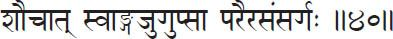
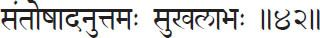

Book Two
Sādhana Pāda
Portion on Practice
This second book, Sādhana Pāda, is concerned with the practice of Yoga. Patañjali begins with instructions in Kriyā Yoga. You might have heard the term “Kriyā Yoga” as propagated by Sri Swami Yogananda Paramahansa, but that should not be confused with Patañjali’s Kriyā Yoga. Yogananda speaks of it as a special combination of breathing and mantras. Patañjali refers to certain practical hints to be followed in our daily lives to prepare us for the more subtle practices to follow.
In the Samādhi Pāda, Patañjali gives us the aim of Yoga in a theoretical way, explaining it as the control of the citta vṛtti, or thought forms. Then the rest of the sūtras in Book I could be classified into several groups: the different kinds of thought forms, the practices to control them, and the different kinds of superconscious experience culminating in the highest experience of nirbīja samādhi, the seedless contemplation. But it is not that easy to get into samādhi, so in this book he tells the student not to get frightened but to prepare himself or herself by laying the proper foundation, then gradually build until that level is reached. For this Patañjali gives a number of simple directions.
1. Tapaḥ svādhyāyeśvarapraṇidhānāni kriyā yogaḥ.
Tapaḥ = accepting pain as purification;
svādhyāya = study of spiritual books; Īśvara = Supreme Being;
praṇidhāna = surrender, to place before;
ani = indicating the three as a group;
kriyā = in action/in practice; yogaḥ = yoga.
Accepting pain as help for purification, study of spiritual books and surrender to the Supreme Being constitute Yoga in practice.
Using the Sanskrit terms, Kriyā Yoga comprises tapas, svādhyāya and Īśvara praṇidhāna. Tapas is often misunderstood, because it gets translated as “mortification” or “austerity,” when it actually stands for something different here. Tapas means “to burn or create heat.” Anything burned out will be purified. The more you fire gold, for example, the more pure it becomes. Each time it goes into the fire, more impurities are removed.
But how can this burning process be effected with our mental impurities? By accepting all the pain that comes to us, even though the nature of the mind is to run after pleasure. We will actually be happy to receive pain if we keep in mind its purifying effects. Such acceptance makes the mind steady and strong because, although it is easy to give pain to others, it is hard to accept without returning it. Such self-discipline obviously cannot be practiced in our meditation rooms, but only in our daily lives as we relate with other people.
Tapas also refers to self-discipline. Normally the mind is like a wild horse tied to a chariot. Imagine the body is the chariot; the intelligence is the charioteer; the mind is the reins; and the horses are the senses. The Self, or true you, is the passenger. If the horses are allowed to gallop without reins and charioteer, the journey will not be safe for the passenger. Although control of the senses and organs often seems to bring pain in the beginning, it eventually ends in happiness. If tapas is understood in this light, we will look forward to pain; we will even thank people who cause it, since they are giving us the opportunity to steady our minds and burn out impurities.
In the seventeenth chapter of the Bhagavad Gītā, Lord Kṛṣṇa [Krishna] talks about tapasya. He says, “Those who practice severe austerities not enjoined by the scriptures; who are given to hypocrisy and egoism, impelled by the forces of lust and attachment; who are senseless; who torture all the elements in the body and Me also who dwells in the body; know thou these to be of demoniacal resolves.” In the name of tapasya people sometimes practice all sorts of self-torture. In the East there are sādhus (ascetics) who lie on beds of nails or keep one arm raised in the air so the arm gets thinner and thinner and finally decays. These are all just forms of self-torture. Lord Kṛṣṇa himself says these people are demons because they disturb the pure Self who dwells within their bodies. Self-discipline is an aid to spiritual progress, whereas self-torture is an obstacle.
Lord Kṛṣṇa divides the true austerities into three groups: physical, verbal and mental. He classifies worship, purity, straightforwardness, celibacy and non-injury as the austerities of the body. Many people immediately come to the conclusion that physical tapasya is not suitable for them. The moment they hear the word “celibacy” they become dismayed. But brahmacarya, or celibacy, means control, not suppression, of the sex desire or sex force. If the mind can be filled with sublime thoughts by meditation, mantra repetition, prayer, study of scriptures and contemplation of the sexless, pure Self, the sex desire will be devitalized by the withdrawal of the mind. On the other hand, suppression of sexual desire will attach you to it again and again, producing wet dreams, irritability and mental restlessness. So the mind should be purified first; then it is easy to control the senses. Strict control over the senses alone will lead to difficulties instead of spiritual progress.
The next tapas is austerity of speech. Speech should bring tranquility and be truthful, pleasant and beneficial. As the Vedic teaching goes, “Satyam bruvat priyam bruvat.” “Speak what is true, speak what is pleasant.” And one should not speak what is true if it is not pleasant, nor what is pleasant if it is false. If something is true and unpleasant, we should make it more pleasant by presenting it in a proper way. And mental austerity is described by Śrī Kṛṣṇa as serenity of mind, goodheartedness, self-control and purity of nature.
Next comes svādhyāya, or study. This means study that concerns the true Self, not merely analyzing the emotions and mind as the psychologists and psychiatrists do. Anything that will elevate your mind and remind you of your true Self should be studied: the Bhagavad Gītā, the Bible, the Koran, these Yoga Sūtras or any uplifting scripture. Study does not just mean passing over the pages. It means trying to understand every word—studying with the heart. The more often you read them, the more you understand. For thousands of years, so many people have been studying the Bible. Every day, thousands of people read this same book. On the other hand, we have millions and millions of books that, after we read them once, we throw away as trash. We don’t exhaust the Bible even after reading it hundreds of times. Each time we read it we see it in a new light. That is the greatness of the holy scriptures. They are that way because they were created by holy prophets who experienced the truth. Each time we read these works we elevate ourselves to see a little more.
It is something like going to the Empire State Building. When you look out of a first floor window you see something. From the second floor, you see a little more; from the third floor, still more. But when you finally reach the hundred and first floor and look over the balcony, you see something completely different.
Similarly, in reading the scriptures, we slowly rise up, expanding and enlarging the mind. The more we elevate the mind, the better our understanding is. But only when we become prophets ourselves will we fully understand the scriptures. That is nature’s law. If you want to understand me fully, you must become me. Otherwise, you can understand me only according to your own capacity. In the same way, God cannot be understood by books alone. God can only be understood when you become God. A Tamil proverb says, “Only a saint knows a saint. Only a snake knows the leg of another snake.” You cannot exactly understand how a snake crawls unless you become a snake. We can hear things, study, form our own opinions, use our imagination, but nothing can equal experience.
Many people simply become walking libraries. They have thousands of books recorded in their brains like computers, but that doesn’t mean they have actually experienced the Self. The Self cannot be known by theory alone. By merely thinking, no one has ever understood the One that is beyond the mind. Only when you transcend the mind can you understand it. This is where Yoga differs from most other psychological approaches. They usually believe you have to understand everything with the mind and that beyond it you cannot understand anything. They stop there, but Yoga claims there is a knowledge possible without the mind. All that you know through the mind is limited and conditioned. How is the limited mind to understand the Unlimited One? Only by transcending it and getting into the unlimited.
Study is all right—but not for mere logic, quoting or fighting. Actually, it is only when you “quote” from your own experience that your words have weight. Sri Ramakrishna Paramahamsa used to say, “Forget all you have learned; become a child again. Then it will be easy to realize that wisdom.” Sometimes, learning becomes an obstacle if you don’t know what and how much to learn. So, limit your reading and put into practice what you read. Just select one or two books—anything that will remind you of your goal.
The last part of Kriyā Yoga is simple but great. It is surrendering to the Supreme Being. I understand this to mean dedicating the fruits of your actions to God or to humanity—God in manifestation. Dedicate everything—your study, your japa, your practices—to God. When you offer such things, God accepts them but then gives them back many times magnified. You never lose what you have given. Even virtuous, meritorious deeds will bind you in some form or other if you do them with an egoistic feeling. Every time you do something, feel, “May this be dedicated to God.” If you constantly remember to do this, the mind will be free and tranquil. Try not to possess anything for yourself. Temporarily keep things but feel you are just a trustee, not an owner.
Be like the mother who receives a soul, nourishes it for nine months and then lets it come out into the world. If the mother were always to keep the baby in her womb, what would happen? There would be great pain. Once something has ripened, it should be passed on. So dedication is true Yoga. Say, “I am Thine. All is Thine. Thy will be done.” Mine binds; Thine liberates. If you drop “mines” all over, they will “undermine” your life—or blow up in your face. But if you change all the “mines” to Thines, you will always be safe.
Let us all dedicate our lives for the sake of the entire humanity. With every minute, every breath, every atom of our bodies we should repeat this mantra: “dedication, dedication, giving, giving, loving, loving.” That is the best japa, the best Yoga which will bring us all permanent peace and joy and keep the mind free from the disturbances of the citta vṛttis.
2. Samādhi bhāvanārthaḥ kleśa tanūkaraṇārthaś ca.
Samādhi = contemplation;
bhāvana = conception, act of producing or effecting;
arthaḥ = to strive, to obtain, ask for;
kleśa = afflictions, troubles, obstacles; tanū = to diminish;
karaṇa = causing, making;
arthaḥ (arthaś) = to strive, to obtain, ask for; ca = and.
They help us minimize obstacles and attain samādhi.
Here, Patañjali explains why Kriyā Yoga should be practiced: to minimize obstacles and to get into samādhi. He puts everything in very simple terms, but we should know and remember the vital importance of Kriyā Yoga. Without it we can never overcome the obstacles and reach samādhi. Mainly, all we do in the name of Haṭha Yoga, Japa Yoga, living in Yoga institutes and āśrams is all part of our Kriyā Yoga—our preparation for meditation and samādhi.
3. Avidyāsmitā rāga dveṣābhiniveśāḥ kleśāḥ.
Avidyā = ignorance; asmitā = ego sense, egoism, I-ness;
rāga = attachment; dveṣa = hatred;
abhiniveśaḥ = clinging to bodily life; kleśāḥ = obstacles, afflictions.
Ignorance, egoism, attachment, hatred and clinging to bodily life are the five obstacles.
Here he gives the obstacles (kleśas) which will then be explained one by one in the following sūtras. The order is also significant: because of ignorance of the Self, egoism comes. Because of egoism, there is attachment to things for the ego’s selfish pleasure. Because sometimes the things we are attached to do not come or are taken away, hatred for those who get in our way comes in. And, finally, because we are attached to things and afraid of death, there is clinging to life in the body.
4. Avidyā kṣetram uttareṣām prasupta tanu vicchinnodārāṇām.
Avidyā = ignorance; kṣetram = field; uttareṣām = for the others;
prasupta = dormant; tanu = feeble; vicchinna = intercepted;
udārāṇām = sustained, fully active.
Ignorance is the field for the others mentioned after it, whether they be dormant, feeble, intercepted or sustained.
In a baby we see an example of the first category. The baby’s obstacles are completely dormant. When you see a baby, you feel, “How innocent it is!” That seems to be so, but as the baby matures, the inborn disposition will emerge; it will not remain innocent. Ignorance and the other obstacles dormant in the mind will come to the surface at the proper time.
The mind of an advanced Yoga practitioner is an example of the second type: the feeble, or attenuated, stage. Such a person is not completely free of the kleśas, but they are there in his or her mind in very subtle trace form. They have sunk to the bottom of the mental lake and out of disuse have become very weak.
The third state of intercepted development is seen in the mind of a beginning practitioner. The obstacles are temporarily pushed down by the constant practice of virtuous qualities such as love, truthfulness, discipline, cheerfulness, etc. If such a seeker is not careful to cultivate these qualities, even for a few days, the obstacles will immediately come to the surface.
The fourth type is seen in the case of average people. The kleśas constantly manifest. Every minute their minds are affected by the obstructions. They have no say over them because they are not exerting any force to control them.
By analyzing our minds we can probably see, “Do I have completely dormant kleśas? Do traces remain, but buried? Am I controlling them by the cultivation of good qualities? Or am I completely ruled by them?”
Here is an example of the different stages in operation. Imagine there is a nice performance at a nightclub. A friend is going and invites you to come. Let’s say you feel drawn to go, but finally you decide, “I have seen hundreds of shows like that; what can I gain by another one? No, I’m going to a Rāja Yoga lecture instead.” The obstacle is there but you overpower it. That is the “intercepted” stage.
If you continue with such discipline, the obstacle will sink to the bottom, but since a trace will still be there, occasionally you’ll be reminded of it. “Why shouldn’t I go to a club?” A gentle trace will arise, which you can easily overpower. “No, I’m not going.” It just comes up to remind you, “I’m still here.” That is the “feeble” stage.
In the case of average people, the moment a nightclub is thought of, both legs immediately go toward it, and the people simply follow. From there, they probably go to an adjoining bar and so on. In their case the obstacles are “sustained.”
5. Anityāśuci duḥkhānātmasu nitya śuci sukhātmakhyātir avidyā.
Anitya = impermanent; aśuci = impure; duḥkha = painful;
anātma = non-Self; (su = in these); nitya = permanent;
śuci = pure; sukha = pleasant; Ātma = Self; khyātir = cognition;
avidyā = ignorance.
Ignorance is regarding the impermanent as permanent, the impure as pure, the painful as pleasant and the non-Self as the Self.
Now Patañjali explains what ignorance is. If I show you a nice piece of fruit that you have never seen before, you will say, “I am completely ignorant of this; I don’t know what it is.” That is just normal ignorance, not knowing something. What Patañjali speaks of in this sūtra is something different. He mentions last the basic ignorance: “regarding the non-Self as the Self.”
What is Self and what is non-Self? The Self is the eternal, never-changing One. It is always everywhere as the very basic substance. All things are actually nothing but the Self, but in our ignorance we see them as different objects. Thus, we take the changing appearances to be the unchanging truth. When something changes, it can’t be the Self. For example, our own bodies are changing every second. Yet we take the body to be our Self; and, speaking in terms of it, we say, “I am hungry” or “I am physically challenged”; “I am black” or “I am white.” These are all just the conditions and qualities of the body. We touch the truth when we say, “My body aches,” implying that the body belongs to us and that therefore we are not that.
Unfortunately, we often add, “I am very, very sick.” Who is actually sick? If the body aches, then the body is sick, not you. Whenever we forget this truth, we are involved in the non-Self, the basic ignorance. We make the same ignorant mistake in regard to the mind, saying, “I am happy,” or “I am ignorant.” Feeling happy, fearful or angry, or knowing a lot or knowing nothing are all modifications or feelings of the mind. Once that is understood, there is nothing that can disturb us in this world. Things will come near us or go away from us, but we will know we are not connected with them—we will know we are not that. Under all conditions we can sing, “Knowledge bliss, knowledge bliss, bliss is absolute; in all conditions I am knowledge, bliss is absolute!”
Well, who is practicing Yoga then? Who does japa, who meditates? It is the mind along with the body. “You” need not do any practice. When you fully realize this, even japa will become an ignorant business. But for now we can get rid of ignorance with ignorance. Take a better ignorance to get rid of a worse one. In the final analysis, only the light of understanding will remove the darkness of ignorance.
There is a story, given in the scriptures, that illustrates this. Once a man walked into the backyard of his house during twilight. All of a sudden, in a dark corner, he saw a coiled snake. Frightened, he yelled, “Snake! Snake!” His voice roused a number of people who came running with sticks. They advanced slowly toward the corner, and one bold fellow with a particularly long, pointed stick gave the snake a hard blow. Nothing happened.
Suddenly, an old man arrived with a lantern. He brought the lantern near the corner where the snake was. The light revealed nothing but a coiled rope. The old man laughed, “Look at all of you blind people groping in darkness. There’s nothing but a rope there, and you took it for a snake.” In order to understand the rope as a rope, a light was necessary. We, too, need a light—the light of wisdom, jñāna. With such a light, the world is no longer a world and all the qualities we call the non-Self appear in their true nature.
We can use this analogy to understand another point also. Twilight is the most dangerous time. Why? Because in total darkness neither a rope nor a snake could be seen. In broad daylight the rope would obviously be a rope. Only in a dull light could the man mistake the rope for a snake. If you are completely ignorant, groping in darkness, you will not even see the “rope”—the pains of this world—and want to understand the truth. So, Yoga is neither for a person who has gained the light nor for the totally ignorant person who doesn’t bother to know anything. It is for the person in between. It is to dispell this ignorance that Yoga is practiced.
6. Dṛg darśana śaktyor ekātmatevāsmitā.
Dṛk (dṛg) = Seer; darśana = instrument of seeing;
śaktyoḥ (śaktyor) = power of both; eka = one; ātmata = identity;
iva = as if; asmitā = ego sense, egoism, I-ness.
Egoism is the identification, as it were, of the power of the Seer (Puruṣa) with that of the instrument of seeing [body-mind].
In this sūtra Patañjali explains egoism. The ego is the reflection of the true Self on the mind. The two appear to be the same, but one is the original, the other a reflected duplicate. The Self will always be falsely represented by the ego until our ignorance is removed. I often refer to these two “I’s” as the little “i” and the capital “I.” What is the difference? Just a small dot, a little blemish of ego. The capital “I” is just one pure stroke, just as the highest truth is always simple and pure. What limits us and makes us little? Just the dot. Without the dot, we are always great, always the capital “I.”
All the practices of Yoga are just to remove that dot. How simple it is. All the difficulties and turmoils can be removed from our lives in no time just by taking away that dot. But preparation for that is what takes time. Many times we climb up only to slip down. Sometimes we get all the way up there only to find we have forgotten to take along an eraser to wipe off the dot. So we have to come down again.
7. Sukhānuśayī rāgaḥ.
Sukha = pleasure; anuśayī = follow with; rāgaḥ = attachment.
Attachment is that which follows identification with pleasurable experiences.

8. Duḥkhānuśayī dveṣaḥ.
Duḥkha = pain; anuśayī = follow with; dveṣaḥ = aversion.
Aversion is that which follows identification with painful experiences.
Attachment to pleasure, or rāga, is another pain-bearing obstacle. We attach ourselves to pleasure because we expect happiness from it, forgetting that happiness is always in us as the true Self. When we expect joy from outside things, we become attached to those things. If we find these things make us unhappy, we create an aversion toward them (dveṣa). So rāga and dveṣa, likes and dislikes, are impediments on the spiritual path. One we like because it seems to bring happiness; the other we dislike because it seems to bring unhappiness.
Everyone wants to be happy. Is there anything we can think of that doesn’t? Even a small worm put in the sun immediately rolls toward the shade. If we put a plant indoors, it will slowly turn its face toward the light, because it too wants to be happy. Happiness seems to be the basic need of everything in this world; yet rarely does anybody find it. Why? Because happiness is like the musk deer. The ancient scriptures have a fable about this animal which has a scented spot above its forehead that gives off the musk fragrance. This deer runs here and there in search of the scent, not knowing the scent comes from its own forehead.
Just like that, happiness is already in us. Wherever we go we reflect our happiness onto people and things. When we see a smiling face and feel happy, it is because the smiling face reflects our happiness. Just as a pure, clean mirror reflects our face beautifully, certain pure, clean faces reflect our happiness. Then we say, “This person gives me happiness.” In other faces, our happiness reflects in a distorted way and we say, “I don’t like that person.” It’s absolute nonsense. No one can ever give us happiness or unhappiness but can only reflect or distort our own inner happiness.
9. Svarasavāhī viduṣo’pi tathā rūḍho’bhiniveśaḥ.
Sva = its own; rasa = potency; vāhī = flowing;
viduṣaḥ (viduṣo) = in the wise; api (‘pi) = even; tathā = thus;
rūḍhaḥ (rūḍho) = rooted, established;
abhiniveśaḥ (‘bhiniveśaḥ) = intentness for life.
Clinging to life, flowing by its own potency
[due to past experience], exists even in the wise.
The next obstacle is the clinging to life: abhiniveśa. Here we can get a clue to the nature of rebirth also.
Many Westerners don’t believe in reincarnation. They feel, “It’s all over once we die.” But the Yoga philosophy reminds us that all our knowledge comes through experience. Without experience we cannot understand or learn anything. Even books can only remind us of something we have experienced in the past. They help kindle a fire that is already in us. That fire must be there first for the kindling stick to kindle it.
For example, have you ever experienced a sapadilla fruit? It is abundant in Mumbai, India, in certain seasons and is very soft and tasty. But even if I spend three hours explaining a sapadilla fruit and how it tastes, you are not going to understand it because you have never experienced it. Knowledge comes only through experience. If you allow a baby to crawl on a tabletop, as it comes to the edge and is about to fall, it will yell. Why? Out of fear of falling and dying. How can fear of death come into the mind of a baby? The baby can only fear death if it has died before.
Some might say, “That’s just instinct.” But what does instinct mean? Yoga says instinct is a trace of an old experience that has been repeated many times, and the impressions have sunk down to the bottom of the mental lake. Although they go down, they aren’t completely erased. Don’t think you ever forget anything. All experiences are stored in the citta; and, when the proper atmosphere is created, they come to the surface again. When we do something several times, it forms a habit. Continue with that habit for a long time, and it becomes our character. Continue with that character, and eventually, perhaps in another life, it comes up as instinct.
Many of you might play the guitar. When you first learned, you might have even marked the notes right on the guitar to get the proper finger position. Each time you played, you checked to see which string should be manipulated. But after a few months, you became proficient and could even talk to someone and play at the same time without looking or thinking about it. How? The experience became habit, and eventually the habit became your character. Probably, in another birth, you might easily pick up guitar-playing without much effort. Don’t people say, “Oh, So-and-so is a ‘born’ guitarist?”
In the same way, all of our instincts were once experiences. That’s why the fear of death exists. We have died hundreds and thousands of times. We know well the pang of death. And so, the moment we get into a body, we love it so much that we are afraid to leave it and go forward because we have a sentimental attachment to it.
Some people have old, old cars, say a 1943 Dodge. Even if you offer them the latest model Dodge, they wouldn’t want it. You may even say, “Your car is no good anymore. You are blocking the road by driving it at ten miles an hour when everybody else is going fifty-five. You need to get a new one.” The motor vehicles department may even take it away by force and throw it in a junkyard, but the owner will sit by it, crying and lamenting. Attachment to the body is like attachment to that car.
God’s government regulations say that if your old body is taken away by force, they must give you a new one. Many people do not know this and cling to the body even when it gets old and dilapidated. That constant clinging, breaking away, clinging again, breaking away is why we are mortally afraid of death. It is another kleśa based on ignorance of our true nature. So all these kleśas, whether dormant, feeble, intercepted or sustained should slowly be gotten rid of. Only then are we ready to go further.
10. Te pratiprasavaheyāḥ sūkṣmāḥ.
Te = these; pratiprasava = resolving back into their cause;
heyāḥ = destroyed, avoided; sūkṣmāḥ = subtle.
In subtle form, these obstacles can be destroyed by resolving them back into their primal cause [the ego].
11. Dhyānaheyāstadvṛttayaḥ.
Dhyāna = by meditation; heyāḥ (heyās) = destroyed, avoided;
tad = those; vṛttayaḥ = active modifications.
In the active state, they can be destroyed by meditation.
The hindering thoughts come in two stages: the potential form, before they come to the surface and get converted to action, and the manifesting ones which are being put into action. It is easier to control manifested things first; then from the more gross, we can slowly get into the more subtle. Thought forms in a potential state (saṁskaras) cannot be removed by meditation. When you meditate on these impressions, you bring them to the surface. You can’t destroy them by this means, but you can see and understand them well and gain control over whether or not they should manifest in action. You can trace them back into their subtle form and see directly that the ego is the basis for all these obstructing thoughts. Then, when you transcend the mind in the higher samādhi, even the ego is lost. When you let go of the ego, all the impressions in it will be lost also. But until that occurs, the impressions will not go away.
It is something like using the herb asafoetida. Asafoetida is a product that aids digestion and helps control gas. In India it is used in curries and kept in a mud pot. But it smells so much that even if you clean the pot hundreds of times, the smell will stay. How can you get rid of the smell? The only way is to break the pot. The ego has the “smell” of your thoughts in a very subtle form. But you can only understand the smell and see that the thoughts are there when they manifest. To get rid of the impressions completely, you have to break the ego. So, first you clean the superficial things, and ultimately you break the pot. By meditation you can understand the thought forms and clean them up. Then when you have gotten a glimpse of where and how they are, you can slowly trace them to their root and finally cut it out. When you want to uproot a tree, you cut the branches first and then dig to the very root.
12. Kleśa mūlaḥ karmāśayodṛṣṭādṛṣṭa janma vedanīyaḥ.
Kleśa = obstacles; mūlaḥ = root; karma = reactions;
āśayaḥ (āśayo) = reservoir, womb; dṛṣṭa = seen [present];
adṛṣṭa = unseen [future]; janma = birth; vedanīyaḥ = experienced
The womb of karmas (actions and reactions) has its root in these obstacles, and the karmas bring experiences in the seen [present] or in the unseen [future] births.
Here Patañjali tries to explain what karma is, how it is stored and how it functions. The Sanskrit term “karma” can mean two things: action and/or the result of action. When you do karma, you reap karma. But, generally, when we say karma, we are referring to the reactions to past actions. Every action will leave its result; every cause will bear its effect. It is impossible to say which comes first. For instance, how does a tree grow? You sow a seed. But where do you get the seed? From another tree. Which comes first, the tree or the seed? Which comes first, the chicken or the egg? It’s impossible to find out. Likewise, it is impossible to know the origin of karma. No one knows where and how it started. But it is here, we see it and we should try to put an end to it.
So, no action goes without its reaction, and these don’t go away but are stored. The receptacle for the karmas is called the karmāśaya, or womb of karmas. The karmas wait for an opportunity to come to the surface and bring their reactions. The kleśas cause these karmas, which may bear fruit now or in a future life; in other words, they are seen or unseen. According to the number of our karmas, we will have births.
But there need not be a separate birth for every karma. Karmas may group together. One strong karma may call for a body, and all other similar karmas that can make use of that particular vehicle to bring their reactions will join in. It’s something like a taxi driver collecting a number of people at the airport and bringing them into the city instead of picking up just one person. First, one person hails the cab, and then a few others who want to go the same way will jump in and then drop out along the way to the city. In the same way, one very strong and powerful karma will say, “I must have a body. I have to express myself.” When such a karma brings a new body and starts working through it, all the other karmas that can take advantage of that body join in. When that karma is over, there will be many more waiting in line.
Even your present body can be changed if you have an intense desire. If your mind is consumed with intense anger, for example, the whole face and body will change to express that emotion. If your present body can’t change enough to fulfill the purpose of a particular thought, the body will be disposed of and you will get a new one. Karmas are that powerful.
Just imagine how many actions you perform, how many have brought forth reactions, and how many reactions must be pending. Good and bad actions bring either meritorious or demeritorious reactions. So, when you take a birth, you are not only enjoying the reactions to previous actions or purging karma, but you may be creating new karma also. There are, then, three kinds of karmas: those being expressed and exhausted through this birth (prārabdha karma); new karmas being created during this birth (āgami karma); and those waiting in the karmāśaya to be fulfilled in future births (sañjīta karma). These are something like the paraphernalia of an archer. There are a number of arrows in the quiver. A really expert archer can take one arrow, fit it into the bow, aim and release it, and immediately take up a second arrow to fit. The arrows would then be in three different stages: one has already left the bow and is on its way. You have no more say over it. You can neither stop it now nor draw it back. This is like the prārabdha karma which has caused this birth. As long as the body stays, the karma allotted to it will continue. Even a person who has transcended the mind and realized the Self still appears to be doing something because the momentum created by his or her birth is still continuing.
The second arrow, ready to be aimed, is like the new karma you create at each moment. You have full control over it. And the quiver represents the karmāśaya. If you want, you can aim the arrows from the quiver. Otherwise, you can take them out. It is in your hands. They are called the sañjīta karma. We control the āgami and the sañjīta, but we can’t do anything about the prārabdha; we just have to accept it. So this cycle continues until Self-realization comes.
13. Sati mūle tad vipākojātyāyur bhogāḥ.
Sati = existence; mūle = upon root; tad = that;
vipākaḥ (vipāko) = fruit maturation; jāti = birth in a species of life;
āyuḥ (ayur) = life span; bhogāḥ = experiences.
With the existence of the root, there will be fruits also: namely, the births of different species of life, their life spans and experiences.
Here you might think about what species you may belong to in your next birth. You need not get a human body. If your thoughts are animalistic, the karmas may call for an animal’s body. If someone is always cunning in this life, the reactions will bring forth more cunning actions which might be better expressed through a fox’s body. Or a person who wants to eat excessively might take a pig’s body so he or she can enjoy that more. But don’t think that this contradicts the theory of evolution. The individual soul always continues to evolve. Even though the individual may get various bodies, which are evolved to a greater or lesser degree and which experience things through these different forms, he or she continues to progress. Remember that the body is not the experiencer. Life is experienced by the mind through the body. The body is only a vehicle or instrument.
When a flower is fragrant, it is not the nose that experiences the fragrance, but the mind through the nose. If the mind doesn’t want to function through the nose because it is occupied elsewhere, it won’t experience the fragrance even if the flower is placed right up next to the nose. When we are concentrating on a book, we won’t hear our friend even if he or she shouts to us, not because our ears are closed, but because the mind is not connected to the ears at this point. So it is the mind that experiences and enjoys everything, not the organs of the body. Even in an animal’s body, the mind experiences and undergoes things. And whenever we gain experience we progress, we purge and we eventually reach our destination.
In our life’s journey toward realization, each body is a different vehicle. A dog on the road may have once been a saint who by a small mistake got into that body. A fox may once have been a miserly, cunning businessperson; a scorpion might have been a big employer always “stinging” his or her employees. So, we can’t say they are merely animals. Within each form lies a soul on its evolutionary path toward realization.
The sūtra also tells us that the span of each life (āyuḥ) and experiences of pleasure and pain (bhogā) are determined by karma, which in turn is the fruit of the obstacles mentioned before.
14. Te hlāda paritāpa phalāḥ puṇyāpuṇya hetutvāt.
Te = they; hlāda = pleasure, delight; paritāpa = pain, distress;
phalāḥ = fruits, results; puṇya = merit; apuṇya = demerit;
hetutvāt = from having cause.
The karmas bear fruits of pleasure and pain caused by merit and demerit.
If you have done something meritorious, you experience pleasure and happiness; if wrong things, suffering. A happy or unhappy life is your own creation. Nobody else is responsible. If you remember this, you won’t find fault with anybody. You are your own best friend as well as your worst enemy.
15. Pariṇāma tāpa saṁskāra duḥkhair guṇa vṛtti virodhāc ca duḥkham eva sarvaṁ vivekinaḥ.
Pariṇāma = transformation, alteration, consequence;
tāpa = anxiety, anguish; saṁskāra = subliminal impression;
duḥkhaiḥ (duḥkhair) = due to pain from the above three;
guṇa = qualities; vṛtti = functioning; virodhāt (virodhāc) = contradiction; ca = and; duḥkham = painful; eva = indeed;
sarvam = all; vivekinaḥ = to the man of discrimination.
To one of discrimination, everything is painful indeed, due to its consequences: the anxiety and fear over losing what is gained; the resulting impressions left in the mind to create renewed cravings; and the constant conflict among the three guṇas, which control the mind.
Here, Patañjali gives a very important sūtra and a great truth in the spiritual field. If we could only contemplate this for at least a little while daily, our lives would be completely transformed. All experiences are painful for the person of spiritual discrimination. In this world, all experiences that come from outside through the world, through nature or material things, are ultimately painful. None can give everlasting happiness. They may give temporary pleasure, but they always end in pain. Even the enjoyment of our present pleasures is usually painful because we fear its loss.
Imagine you have a high position, appreciated by hundreds of people. Everybody says you’re a great person. Gradually you learn to love that position. “Isn’t it nice to be admired by everybody, to have hundreds of devotees around, thousands of disciples across the country? This is really fine.” But a fear might simultaneously come in. “Suppose I lose this position? If my disciples leave me one after another, what will happen to me?” Where is the pleasure in the position then?
Or perhaps you accumulate money. I have seen people who rush to the stock market page as soon as they see a newspaper. If their stocks rise just one percent over the previous day, they’re ecstatic until they see the next day’s paper. Toward evening their tension will build up; all night they are restlessly waiting to see the morning’s paper. Do they really enjoy their money? No, because they want to possess it. All our so-called pleasures bring in the fear of losing them. We might lose our position, our money or our beauty. There are even people who insure their eyes, noses, earlobes, even fingers and toes. They become anxious about even touching things. They are always tense. It’s all right to have a beautiful face; it’s all right to have anything, as long as you don’t let these things bring you anxiety and fear. If they come to you, let them come; enjoy their presence. But when they go, enjoy their departure too. When they come, they come alone, so allow them to go alone without losing your mind along with the external object. Past pleasures are painful because renewed cravings arise from the impressions they leave in the mind. “Once I had a beautiful car; I don’t know when I’m going to get another one like it.” Whenever you see someone with such a car, it will make you unhappy. You’ll be reminded of all your old high times.
In reality, nothing is bad in this world. But the three guṇas are forever tossing the mind. What you enjoy one minute, you hate the next. When you are in a good mood, your children may come and play with you. But when you are in a terrible mood, you say, “Get out. Don’t disturb me.” Real pleasure comes from detaching ourselves completely from the entire world, in standing aloof—making use of the world as a master of it. Only in that can we have pride.
I am not saying that because everything is painful, we should run from it. That doesn’t work. Wherever we go, the world follows. If you don’t understand the world and attempt to run away, you can never succeed. I have seen people who cannot run their own homes or cooperate with their families say, “I’m disgusted. I renounce. I don’t want anything. I am going into the spiritual field to meditate and practice Yoga.” You try to run away from family life, but once you come to an āśram, you face a whole new home and family. At least in the original family you knew the people, and those people probably had a little consideration for you. In an āśram all the faces are new. In the beginning there isn’t much affection. Each person may have his or her own problems. So when you can’t adapt yourself to your known family, how can you expect to adapt to an unknown group? A known devil is much better than an unknown one.
Wherever we are, we have to learn to handle things properly. We can’t always change environments, running here and there. But once we know how to handle one small family, we can handle a larger group. A family life is a training place for public life. If you can’t face a sharp word from your mate, how can you face such words from a stranger? The world is a training place where we learn to use the world without getting attached. Instead of saying, “To one of discrimination, everything is painful,” it becomes, “To one of discrimination, everything is pleasurable.” A person with such an understanding has the magic wand to convert everything into happiness. Pleasure and pain are but the outcome of your approach. The same world can be a heaven or a hell.
The way to begin, though, is with the feeling, “It is all painful. Let me detach myself. Let me not become involved in it. Let me not approach the world with selfish motives.” Once this is accomplished, you see with a different vision. You begin to use the world for a different purpose, and you experience happiness. Before you learn to swim, water seems to be a dreadful place. “Suppose I drown? What will happen to me?” But once you learn to swim, you love the water. The world is like that. You have to learn to swim in this ocean of saṁsara—to become a master swimmer.
16. Heyaṁ duḥkham anāgatam.
Heyam = avoid, prevent; duḥkham = pain;
anāgatam = not yet come, future.
Pain that has not yet come is avoidable.
17. Draṣṭṛ dṛśyayoḥ saṁyogo heya hetuḥ.
Draṣṭṛ = the Seer; dṛṣyayoḥ. = the seen;
saṁyogaḥ (saṁyogo) = union; heya = avoidable; hetuḥ = cause.
The cause of that avoidable pain is the union of the Seer (Puruṣa) and the Seen (Prakṛti or Nature).
First, Patañjali tells us the reason for this pain. Its cause is the union of the Seer and the seen. Yoga philosophy speaks of two important things: one is the Puruṣa, the other is the Prakṛti. The Puruṣa is the true Self. It is the Puruṣa who sees. The Prakṛti is everything else. All other things besides you are the seen. But it seems we always identify ourselves with what is seen, with what we possess. As the Self, all things are possessed by us. That’s why we say, “my body, my mind, my language, my knowledge.” Everything we call ours cannot be us. We speak of ourselves in two ways. One is, “Look at my body. Isn’t it slim?” The other is, “Look at how slim I am.” Who is slim? Is it you or the body? This identification with other things is the cause of all our pain. Instead, if we are just ourselves always, things may change or stay as they are, but they will never cause us pain because the changes will be in the things we possess and not in us.
Stay in your true Self. You are the knower. You know everything. When you are happy, you know you are happy. When you suffer, you know you suffer. That knowing is permanent. You know you have a headache, but at the same time you say, “I am aching.” This identification should be avoided. If you feel you have suffered a loss, ask, “Who is the loser?” You’ll find that you are still here, that you didn’t lose yourself, but just something you had. That will greatly reduce your sorrow. When you mix yourself up with your possessions, pull yourself out of the mire, and your feelings will change greatly. You’ll be a different person.
18. Prakāśa kriyā sthitiśīlaṁ bhūtendriyātmakaṁ bhogāpavargārthaṁ dṛśyam.
Prakāśa = illumination; kriyā = activity; sthiti = inertia;
śīlam = nature, characteristic; bhūta = elements;
indriya = sense organs; ātmakam = consists of, having that nature;
bhoga = experience; apavarga = liberation; artham = purpose;
dṛśyam = the seen.
The seen is of the nature of the guṇas: illumination, activity and inertia; and consists of the elements and sense organs, whose purpose is to provide both experiences and liberation to the Puruṣa.
Now Patañjali talks about the dṛśya, or seen. Ātma or Puruṣa or the Seer all denote the same entity, the true you. You become a knower because there is a known. You become a seer because there is something to see. Here Patañjali tries to analyze what this “seen” is that gives us experience. He says it is a combination of different elements and organs controlled by the three guṇas. He uses the terms prakāśa kriyā sthiti. Prakāśa means illumination and stands for sattva. Kriyā is action and represents rajas. Sthiti is inertia, or tamas. Why are there these outside things which we see? Why does Prakṛti exist?
Nature is here to give you experience and, ultimately, to liberate you from its bondage. Even if people do not want to be liberated, it educates them gradually so that one day they will come to feel, “I’m tired of the whole thing. I don’t want it anymore. I’ve had enough.” When will we feel this way? Only after we’ve gotten enough kicks and burns. The purpose of Prakṛti is to give you those knocks. So, we should never condemn nature.
Nature is a combination of elements and organs. The organs include the intellect, mind, senses and the body. Normally, we think of nature as being something other than our own bodies, but when we feel we are the true Self even the body becomes part of the nature because it, again, is merely a composition of the elements. If we don’t eat, there will be no body. A baby comes out as six or seven pounds of flesh, and even that weight is built up in the womb by the mother’s food. The food materials which create the body are just part of nature. Even the mind, senses and intellect are part of nature, although a very subtle part. They are matter, and that’s why they change. Anything that is matter, or nature, changes. The body changes every second. Cells die; more are born. Likewise, there is continuous change in the mind and intellect.
Nothing in nature can bring the mind continuous, unchanging happiness, because the mind itself changes constantly. Although we have the same stomach, we don’t want to eat the same food every day. Although we wear the same shape, we don’t wear the same outfit every day.
The secret of our wanting changes is that the mind changes. If it were always the same, why would it look for change? If we know that, we can just allow things to change without clinging to them. If something changes, we should let it go—something else will come. We should watch the changes like passing clouds. But, normally, we don’t want to merely watch them. We want to hold onto a section without letting go. Then the tension comes in. Changes are like flowing water. If you just allow water to flow, it is very pleasant to sit and watch. But if you want to arrest the flow and keep the water for yourself, you will have to construct a dam. Then the water will resist the dam and try to escape. There will be a terrible struggle. Although you may stop some of the water, another portion will overflow. So you must allow for spill-out or the dam will certainly break.
All life is a passing show. If we want to hold it, even for a minute, we feel tension. Nature will try to run away; we will try to pull it back and keep it. When we want to keep it, we put up barriers which ultimately cause us pain.
Even with our own bodies, if we don’t want them to change, trouble will come. We will buy all kinds of make-up, creams and wigs to retain our “youth.” If only we learn to enjoy each change, we can recognize the beauty even in aging. A ripe fruit has its own beautiful taste. When we just allow things to pass, we are free. Things will just come and go while we retain our peace.
Swami Vivekananda tells a story from Hindu mythology. At one time Indra, the king of the gods, was forced to descend from his high position and take the body of a pig. Pigs, as you know, live in mud. So Indra got into the mire, rolled around and eventually found a female pig with whom he mated. The outcome of their love was a number of young piglets. They were all very happy. But the gods in heaven, seeing the plight of their king, were horrified. When the gods could no longer tolerate it, they came down and said, “You are Indra, our king. What are you doing here? We are ashamed of your present habits.”
Indra replied, “Who says I am unhappy like this? You live up there and say I don’t have a happy life here. What fools you are. You should become pigs. Then you’d really appreciate the joy of it. Come on. Don’t waste another minute. Get into pigs’ bodies. Then you’ll see how wonderful it is.”
“Sir,” the devas (gods) said, “we can’t let you go on like this. You must come out.”
“Don’t disturb me,” Indra replied. “I have to take care of my young ones. They are waiting for me to play with them.”
The devas went wild. “All right,” they decided. “Since he’s so attached to his children, we’ll have to take them all away.” One after another they killed the piglets. Indra began crying and wailing.
“What are you doing?” When he calmed down, he went to the shepig and clung to her, saying, “All right. I’ll just have more babies.” But the devas were adamant. They pulled the she-pig from Indra and killed her. When Indra continued to moan and cry, they decided to get rid of his body as well. As soon as they pierced open his pig body, Indra’s soul came out and looked in amazement at the dead body on the ground.
“Not only were you in that body, sir, but you wanted to stay there.”
“I don’t want any more of this,” Indra said. “Come. Let’s go back.”
That is how nature works. As long as we enjoy experiencing nature, no matter what those who understand the truth tell us, we will answer, “Oh, you just don’t know how to enjoy the world. You don’t have enough education, enough money, enough power. You people come from your poor country and tell us nonsense. You want us to become beggars also. Get out. We want to enjoy all our luxuries.” And because the enlightened can’t tear out your pig’s body, rip up your checkbooks and finish up your bank balance, they say, “We’ll wait. One day you’ll learn your lesson.” When all the entanglements tie you down, when you see you have no room to move about any longer, then you will realize the truth of their words.
All these entanglements are like the life of the silk moth. Silk yarn is a sort of fleshy, pulpy substance that comes out of the silk moth. When the moth is just a day old, it is the size of a hair. You can have more than a hundred worms within the space of a thumb. The next day, you’ll need the palm of your hand to accommodate them. On the third day, you’ll need a large tray. Within thirty days, each worm is thicker than a thumb and over three inches long. They grow so big within such a short time because they do nothing but eat mulberry leaves.
The first day, all hundred worms can feed on a single leaf. The second, a basketful of leaves is needed. The third, a cartload. The fourth, a truckload. Day and night they consume the leaves. The more they are given, the more they take. After thirty or forty days they are so tired they can no longer eat. Then they sleep, as anyone who overeats does. When people go to sleep on a full stomach, they roll about, this way and that, as digestion is carried on. So the worms roll, and while they roll, a juicy type of saliva comes out of their mouths. All that the worms ate comes out as a stream of thick paste, which forms silk thread. While the worms rotate they become bound up in the thread—the silk cocoon. When all the thread has come out, the worms go into a deep sleep wherein they know nothing.
Finally, they awaken to see themselves caught in the tight cage created by their own saliva. “What is this?” the worms think. “Where am I? How did this happen?” Then they remember. “We ate and ate and ate. We enjoyed everything we could, without exception. We overindulged and became completely exhausted, then totally unconscious. We rolled around and around, binding ourselves up in this cocoon. What a terrible thing. We should have at least shared what we had with others. We were completely selfish. People of wisdom spoke a lot about a selfless life of sacrifice, but we never listened, nor followed their advice. The moment they stopped speaking, we started eating again. All those wise words came in one way and out the other. We are paying for our mistakes now. Well, we repent for all our sins.”
The worms repent, pray and fast. In their deep meditation they resolve all their unconscious impressions and decide not to live a selfish life again; in the future, they will discriminate before accepting anything. At this decision two wings appear on either side of each worm—one named viveka (discrimination), the other vairāgya (dispassion). These are combined with a sharp, clear intellect, which turns into a sharp nose to pierce open the cocoon. With that, the worms—now silk moths—slip out and fly up high with their fantastically colored wings and look back to see their discarded prisons. “We are leaving and we’ll never come back to that again.”
There is a beautiful lesson in this story. We should ask ourselves, “Where are we now? Are we still eating? Are we in the cocoon? Are we meditating? Are we growing wings?” Let us ask that question, and if we find ourselves still in the process of consuming, it is better to stop and dispose of what we have already taken in. The more we enjoy, the more we are bound. While enjoying, we are not going to listen to wisdom unless we have extraordinary intelligence. If we don’t want to listen, nature teaches us her lesson by putting us into a tight corner. She binds us tight to reveal her nature so we will no longer cling to that. In other words, she liberates us.
After liberation, although we are still in nature, we are no longer bound by it. It is as if we acquire nice thick rubber gloves which allow us to touch any voltage without damage. Like the silk moth’s wings, these gloves are viveka and vairāgya. When you possess them, you can touch anything and no harm will come to you.
When you’ve learned nature’s lessons, she no longer has any business with you, but she continues to exist to teach the many others who have not yet learned. You have passed out of the university. You might still go in as an alumnus, just to see how the people are faring, but you are no longer attached. A liberated person can come into the world and be useful to it but is not affected by it.
19. Viśeṣāviśeṣa liṅgamātrāliṅgāni guṇa parvāṇi.
Viśeṣa = specific; aviśeṣa = non-specific; liṅga = mark, defined;
mātra = only;
aliṅgāni = without mark, undefinable, primary, undetectable matter;
guṇa = qualities; parvāṇi = stages.
The stages of the guṇas are specific, non-specific, defined and undefinable.
Here, Patañjali analyzes Prakṛti a little more. He divides all of nature into four stages. Going in reverse order from the way Patañjali expresses them, first there is the unmanifested, or avyakta, stage which is nature in a static or undefinable condition. A slightly manifested stage (defined) is next. The third is a more developed stage where nature forms into the subtle senses, buddhi and mind. And the fourth stage is the gross objects, which we can hear, feel, see, touch, smell and taste.
Normally, we only understand things we can see. However, if we develop a subtler perception we can also see the subtler things. For instance, we can see a flower, but we can only sense the smell, rather than see it. Even the smell is matter, although very subtle; and, if we have developed subtle enough perception, we can see it emanating like a magnetic force. Although each individual has an aura, we normally see bodies but not their auras, the colors of their astral bodies. But we can develop the subtle senses to see them.
20. Draṣṭā dṛśimātraḥ śuddho’pi pratyayānupaśyaḥ.
Draṣṭā = the seer; dṛśi = power of seeing; mātraḥ = only;
śuddhaḥ (śuddho) = pure; api (‘pi) = although;
pratyaya = contents of mind, assumption, belief;
anupaśyaḥ = perceive, seeing.
The Seer is nothing but the power of seeing which, although pure, appears to see through the mind.
After discussing Prakṛti, Patañjali talks about the Seer, or Puruṣa. Even though the light is pure and never-changing, it appears to change because of the medium of nature. The sun’s rays appear to bend when they pass through a section of water although they do not actually bend. A filament gives pure light but appears to be red because of the red glass that surrounds it. Likewise, we are all the same light; but we do not look alike, act alike or think alike because of the nature of our bodies and minds. If the mind accumulates some ideas of law, we become lawyers; some knowledge of medicine, we become doctors. If we have no ideas, we are called fools. So, although the original substance is the same, we appear to be different.
Through Yogic thinking we can see the entire humanity as our own. We can embrace all without any exceptions. Even the worst sinner will be loved by us because we ourselves were once sinners. Today’s sinner is tomorrow’s saint. We will never criticize a sinner if we realize that we were once in the same boat. Instead, we can give the so-called sinner a helping hand. If a baby dirties its diaper, you take it out of the crib, clean it and put on a new diaper. You don’t criticize it. If you wish to criticize it, you have no business being with that child.
So Yoga helps in every aspect of our lives, from the White House to the outhouse. It’s not something to be experienced only after sixty years of practice, but something that can benefit everyone now.
21. Tadartha eva dṛśyasyātmā.
Tad = that, its; arthaḥ = purpose; eva = only;
dṛśyasya = of the seen; ātmā = the Seer.
The seen exists only for the sake of the Seer.
As we saw in the previous sūtras, nature is here to give experience to the Puruṣa and so we think the Puruṣa is doing the experiencing. In reality, the Puruṣa isn’t experiencing anything. It is just a witness. But since it appears to be experiencing, we must try to understand it from that level. Once we go further, we will realize that the Puruṣa is neither the doer nor the enjoyer and we will change our vision and attitude; but, for now, we start from where we are.
The very word “understanding” is a combination of two words: “under” and “stand.” To understand, we should stand under. But stand under what? Under where we now stand. We should know where we stand first and then try to “under” stand, to go a little deeper. When we try to understand, we will find we are not all on one “stand” but at different levels, with different capacities, tastes and temperaments.
Each individual has his or her own stand. My understanding is completely different from yours. One and the same scripture appears differently to different people as each one tries to interpret it from where he or she stands. So, here Patañjali is saying we are now under the impression that the true Self is experiencing something, but one day we will know that the Self never does anything nor will it ever enjoy anything.
22. Kṛtārtham prati naṣṭam apyanaṣṭam tad anya sādhāraṇatvāt.
Kṛta = done, accomplished; artham = purpose [here: liberation];
prati = upon, towards; naṣṭam = destruction [the seen];
api = even though; anaṣṭam = not destroyed; tad = that [the seen];
anya = others; sādhāraṇatvāt = from commonality, universal.
Although destroyed for one who has attained liberation, it [the seen] still exists for others, being common to them.
According to the Vedantic term, nature is called māyā, or illusion. To whom is it māyā? To the person who has understood it. To others it is still real. The entire world is a sort of factory. In a factory we can see raw materials come in: timber, iron, etc.; but as they pass through different processes and various machines, they come out as finished products, which go to the showroom, the sales section and finally to the consumer. These products don’t return to the workshop again. But the workshop continues to function as raw materials keep passing through it.
The world is our factory. As we pass through we are shaped every minute by different experiences. We become refined as our knowledge develops. Eventually, we understand the world completely and have no business being in the factory any longer. Then we can say, “Once I thought all this was real: money, name, position, beauty. But now I understand that none of this is permanent. I have watched millionaires become paupers, famous beauties become wrinkled.” When that understanding comes, we no longer trust the worldly pleasures nor run after them. When we stop running after the world, the world says, “All right, I won’t bother you any more. But whenever you wish to make use of me, I’m ready to serve you.” Then the world runs after you. But we can’t shape ourselves without the factory’s help. We should know nature first. That is why nature is called the Mother. Only through the Mother can we know God. Nobody on this earth has understood who his or her father is without the mother’s help. She alone can tell us who the father is.
Know nature well. Don’t try to run from it. Let there be no running away or dropping out. Escapism never helps us. If we try to leave something now, we will have to face it in a more difficult form later on.
Another thing is: we must always be alert and aware with māyā. The world will try to cheat us in every way. It will attempt to come through every nook and corner. We must have thousands of eyes all over in order to face the world. But we must face it, understand it, analyze it and solve its tests.
Many people are afraid of knowing what their problems are. They just want to swallow a pill and forget everything. Instead, they wake up with several new problems. They want to become ostriches. When there is a danger in sight, they want to bury their heads in the sand. But that doesn’t mean they have solved their problems. Once we solve and understand our problems, we become masters. Once we are masters, we are no longer bound by nature. It becomes our slave.
23. Sva Svāmi śaktyoḥ svarūpopalabdhihetuḥ saṁyogaḥ.
Sva = being owned (Prakṛti), one’s; Svāmi = the owner (Puruṣa);
śaktyoḥ = of the powers; sva = one’s; rūpa = nature;
svarūpa = one’s true nature, essence;
upalabdhi = recognition, apprehension;
hetuḥ = cause; saṁyogaḥ = union.
The union of the Owner (Puruṣa) and Owned (Prakṛti) causes the recognition of the nature and powers of them both.
Saṁyoga (union) is necessary for the Puruṣa to realize itself with the help of nature. Saṁyoga means perfect union or junction. And here it doesn’t mean the union of the individual self with the higher Self, but the union of the Puruṣa and Prakṛti, Self and nature. When they are completely apart, they don’t express themselves. Their connection, however, lets us know them both. They help each other. It is something like if you want to print with white letters, you must have a black background for contrast. You can’t write white letters on a white background. Through the Prakṛti, we realize we are the Puruṣa. If not for the Prakṛti, we could not know ourselves. So Prakṛti isn’t just bondage as many people think. It is necessary.
24. Tasya heturavidyā
Tasya = its; hetuḥ (hetur) = cause; avidyā = ignorance.
The cause of this union is ignorance.
Here, Patañjali laughs at the idea he has just expressed. The cause of the saṁyoga is ignorance. This may seem a bit confusing, but if we understand it properly there’s no puzzle. You see, in the previous sūtra, we’re still in the world and wondering about the reason for nature. Once the Puruṣa understands itself, it thinks, “How did this union come about? It’s because I’ve forgotten myself. What an ignorant person I was. Because of my ignorance I created this union.” Such a person laughs at it, but this attitude comes only after realization. It’s like a dreaming person who, upon waking, laughs at his or her own frightening dream. The understanding behind this sūtra is a result of realization. Once we realize, we can advise others: “I was ignorant. I had terrible experiences. I thought nature was real, happiness was real. I ran after them. But now I know what they are. I learned the hard way. Do you also want to have to learn the hard way? Why don’t you take my advice?”
These sūtras are reminiscent of the Four Noble Truths of the Buddha: the misery of the world, the cause of misery, the removal of that misery and the method used to remove it. Patañjali tells us that pain can be avoided. He further tells us that its cause is ignorance. In sūtra 26, he gives us another word, hāna, the removal of this misery, and then hānopāya, the method to remove it. We can really see the similarity between the Four Noble Truths and the Yoga Sutras. We needn’t search for who copies whom. Truth is the same always. Whoever ponders it will get the same answer. The Buddha got it. Śri Patañjali got it. Lord Jesus got it. Prophet Muhammad got it. The answer is the same, but the method of working it out may vary this way or that.
25. Tad abhāvāt saṁyogābhāvohānam tad dṛśeḥ kaivalyam.
Tad = that [ignorance];
abhāvāt = from the absence, from the disappearance;
saṁyoga = union; abhāvaḥ (abhāvo) = absent, dissolution;
hānam = removal, cessation; tad = that;
dṛśeḥ = of the Seer, of seeing; kaivalyam = absolute independence.
Without this ignorance, no such union occurs. This is the independence of the Seer.
More simply, once the junction created by ignorance is removed, the Seer rests in Its own true nature. The Puruṣa is always like that; although temporarily it appears to be bound by Prakṛti. We should not only understand this theoretically but should remember this point in all our experiences, all our actions, all our ups and downs. Ask, “Am I tainted by this?” “Who am I?” “Who is happy?” “Who is unhappy?” If we continually ask these questions and do this kind of meditation, we will find that we are only the knower. We know that many different things happen, but there is no difference in the knowing.
The Vedantins say, “Aham sakṣiḥ.” “I am the eternal witness.” Even if we know this only theoretically, it will help us out on many occasions. When we are worried over a loss we should ask, “Who is worried? Who knows I am worried?” Along with the answer, the worry will go away. When we analyze the worry, it becomes an object, something we are no longer involved with.
We can have that attitude even with pain. If we burn a finger, instead of saying, “Oh, I’m burning!” we should ask ourselves, “Who says, ‘I am burning?’ Who feels the burn?” The burn will become a nice object of meditation. This method is only a matter of changing the mind, taking it away from a certain object.
I used to treat people for scorpion stings. These stings create a lot of pain. The easiest and quickest way to relieve someone from the pain was to put a few drops of a salt solution in their eyes. This has nothing to do with curing the sting, but it would cause the patient to cry, kick and weep, taking the entire mind from the sting to the eye. By the time the sore eye was relieved, the pain from the sting would have been forgotten and would have gone away. If we are sad over a minor discomfort and all of a sudden receive a telegram saying our business has suffered a tremendous loss, we immediately forget the small problem. The attention is instantly transferred. So everything is relative. Every experience in the world is mental. We might put our minds onto something and think, “This is really great,” but once our attention goes somewhere else, that thing becomes nothing to us. That is the reason for the Sanskrit expression, “Mana eva manuṣyanam,” “As the mind, so the person.”
The cause of bandha and mokṣa (bondage and liberation) is our own minds. If we think we are bound, we are bound. If we think we are liberated, we are liberated. Because you think you are living, you are living. If you applied your mind one hundred percent to the thought that you were dying, you would die. It is only when we transcend the mind that we are free from all these troubles.
The mind is the agent of Prakṛti and a subtle part of that same Prakṛti. We should realize we are completely different from the mind. We are eternally free, never bound. That doesn’t mean we should simply become idle; but once we realize our freedom we should work for the sake of others who are still bound. When a strong person crosses a turbulent river, he or she will not walk away after crossing but will stand on the bank and help pull out everyone else. There are many sages and saints who are involved in the world even with the knowledge that there is no happiness in it. They work for the sake of others.
26. Vivekakhyātiraviplavā hānopāyaḥ.
Viveka = discrimination, discernment; khyātir = pristine perception;
aviplavā = uninterrupted; hāna = removal; upāyaḥ = method.
Uninterrupted discriminative discernment is the method for its removal.
This is called viveka in Sanskrit. You try to understand and see the permanent aspect in everything and ignore the impermanent aspect. The entire world has these two aspects: permanent and impermanent, or the never-changing and the ever-changing. The essence of everything is the same, but it appears in many forms and names. On the level of form, you are not the same person now as you were last week. Even a minute ago you were different. Every minute the body is changing: some part is dying, and some part is being born. According to the Yogic system, the entire body changes in a period of twelve years; in other words, you do not have even one cell that was there twelve years ago.
Discrimination does not mean to discriminate what is salt and what is sugar. That is just ordinary understanding. The real discrimination is to tell the original basic Truth from the ever-changing names and forms It assumes. If we could remember that basic Truth, we would never face disappointment nor get upset over the changes in the forms and names. Our minds would remain steady. It is for this understanding that we say the prayer, “Lead us from unreal to real, from darkness to light, from death to immortality.” What is it that dies? A log of wood dies to become a few planks. The planks die to become a chair. The chair dies to become a piece of firewood, and the firewood dies to become ash. You give different names to the different shapes the wood takes, but the basic substance is there always. If we could always remember this, we would never worry about the loss of anything. We never lose anything; we never gain anything. By such discrimination we put an end to unhappiness.
Next, Patañjali goes on to explain the Puruṣa’s different stages of attainment as it gradually goes upward to rest in its own true nature. This is called saptadhā bhūmi, or the seven planes of understanding.
27. Tasya saptadhā prāntabhūmiḥ prajñā.
Tasya = it has; saptadhā = sevenfold; prānta = final, ultimate;
bhūmiḥ = stage, ground; prajñā = wisdom.
One’s wisdom in the final stage is sevenfold. [One experiences the end of 1) the desire to know anything more; 2) the desire to stay away from anything; 3) the desire to gain anything new; 4) the desire to do anything; 5) sorrow; 6) fear; 7) delusion.]
The first stage is where we come to the conclusion that by running here and there, by looking to externals, we are not going to gain the knowledge we seek. Knowledge is a thing to be obtained from within by tuning in. “Tuning in” means to go in, to understand ourselves, to “know thyself” first. If we do not know ourselves, we will make mistakes in knowing other things. We should know with what glasses we are viewing the outside. Are they clean or colored? If they are colored, naturally we will see a colored world outside. We can’t blame the world for this color. A scale should be correct itself before trying to give the correct weight of objects placed on it. If the scale is wrong, the weight will certainly be wrong. We must see if the mind is in a neutral position so it can judge things properly.
The second understanding is that all experiences of pleasure and pain come not from the outside but are the interpretation of our own mind. The mind makes these experiences and creates these feelings. If this understanding comes, all miseries and pains are over; we will see we are not pained by any externals and that nothing can make us unhappy. When we know that our mind is the cause of these pains, we will try to correct it rather than blaming the outside world or other people. We will feel no need to seek after things, nor to avoid them.
The third position comes once you understand the mind fully and, with that neutral mind, attain cosmic understanding. You need not study anything for that. No books can give it. Many saints were illiterate. They never even knew what a school was. But we read their ideas even now. None of the Upanishadic seers went to colleges or universities. They merely sat under trees and watched nature. But their words are crest jewels now. Where did their learning come from? It came from within. There is a wealth of knowledge inside. The scriptures say, “Know the One by knowing which you will know everything.” This understanding without learning is the third level of consciousness.
The fourth step comes once we understand nature and its workings. We feel there is no longer anything to be done. If we understand the cosmic plan, we rise above all doership. There is no particular duty for us, no do’s or don’ts. At that time, we are prompted to do things only because our minds are linked to the cosmic mind; there is no personal action. As we are prompted, we just do. We do not know why we are doing things and will not bother about whether they are good or bad. The scriptures ask, “Ko vidhi ko niṣedaḥ?” “What is a must and what is not?” There are no musts, nothing one must do, nothing one should or should not do. Whatever we do is part of the cosmic plan. That means, even though such a person appears to be doing something, really he or she is not doing anything and becomes the akartā, the non-doer. A Tamil saint put that idea into a poem. “Oh Lord, I gave You my entire personality, body, mind and life—and You have accepted it. If there is anything happening through my body or mind, am I responsible? Good might happen. Bad might happen. But You are responsible. You make me do this. People may say, ‘He is a bad man. He is doing bad things.’ But You know that it is not I who do it; it is You working through me.”
These words will come only when we realize we are completely in the hands of a higher will. It is very easy to stand in front of the altar and say, “I am Thine. All is Thine. Thy will be done.” But do we really feel that way? Have we really completely given up? In such a state there are no duties for us. All our duties are God’s duties. We are not responsible. But this state cannot be merely an intellectual understanding. If that is the case, we can even slap someone on the face and say, “It is all God’s will. I gave God everything. Even my hand has been given to God who is using it to slap you.”
Some people, when their businesses do well, say, “We really know how to do business. We bought this at the right time. Now see the ten percent increase in sales?” And if their businesses do badly, they say, “My goodness. Every day we burn candles for God who has no eyes at all. There is no point in my believing in God. If God were merciful why should we have such a great loss?” When profit comes, they are responsible. When loss comes, God is responsible. Our attitude should be constant: either we are responsible for everything or God is. We should always blame it on the big “I” or the little “i” but not on whichever is convenient at the time. If we want to be egoistic, we should be egoistic for everything. Even if someone abuses us, we should feel responsible for that abuse. Either we should surrender completely to God’s will or use only our will.
The fifth plane is actually an after-effect of that understanding. Once we come to know there is nothing to be done, the citta is completely free of impressions. It is liberated. Because it had the tinge of ego, it acted as it wanted. Once that is separated, it just becomes a humble, simple mind, completely free of impressions; and, although old impressions remain, they lose their capacity to disturb the mind.
In the sixth level, the citta loses itself. That is called mano-nāsa or citta-nāśa and means the mind is completely chucked off. When the mind gets totally dissolved, the seventh and last plane remains. This is when the Puruṣa alone remains, resting in its own svarūpa. Here, the Puruṣa rests in itself for there is nothing else to rest in. “Ātmanā Atmanaṁ pasyann Ātmani tusyati,” says the Bhagavad Gītā. “Beholding the Self by the Self, one is satisfied in the Self.” This is the highest samādhi.
We should all know what these things are, because one day we will certainly all reach that state. As they happen, we will see the signs. Sometimes people are frightened by the unexpected. If they suddenly lose physical consciousness in meditation, they feel, “Something is happening to me. Am I going to die?” They disturb their meditation. Instead, if we know the signs we will welcome these things.
The aforementioned are the different stages along the Yogic path. Once the first stage is achieved and we learn to go within without expecting anything from externals, we have caught hold of the first link. Then it’s only a matter of pulling in order to get the entire chain. But the first one must be present.
Saint Thirūmular said, “A person was running and running in search of the Light. He spent his whole life doing that. Ultimately he collapsed and died because he couldn’t reach it.” Millions and millions of people collapse this way because they don’t know that the Light is within.
Another saying of his is, “Even if you practice Yoga for eight thousand years, you are not going to reach the Light.” By this he means external Yoga: reading books, learning all the scriptures by heart, going on pilgrimages to all the temples, āśrams and churches in the world. That is all bāhya, or external practice. Some people waste thousands of years in such effort. If we only look within, we will see the Light as if we were seeing our own image in a mirror.
All the different religions say this: We are not going to get it from outside. Turn in. Look within. Know thyself. The teachings can help you slightly, but too much learning may just muddle your mind. We should learn a little and work with that. Turning inside means turning the senses within; trying to hear something within, see something within, smell something within. All the scents are within us. All the beautiful music is within us. All art is inside. Why should we search, running after museums and gardens when every museum and garden is inside us?
We should spend a little time in the morning and evening to go within. Gradually we can extend this to our entire daily life. Whatever our limbs do outside, we can keep our minds pulled inside. As I quoted before, a Hindu saying goes, “Man me Rām, hath me kām.” “There is work in the hand, but Ram (God) in the mind.” Things like books are only aids which we should not hesitate to let go of when they are no longer useful. With the help of a ladder we can get to the rooftop, but once on top we let go of the ladder. We needn’t continue to put garlands around the ladder and prostrate to it. Many times people adore and worship symbols. For example, there are those who bind and place their scriptures in velvet cases which they keep on their altars and carry in procession but never even read one line of.
Symbols should be used to help you transcend them. With the help of the mind, we transcend the mind. Once we reach our destination, we can throw it out and go away. There should be no sentimentality here. Make the proper use of spiritual aids, but do not hesitate to leave them and go further. When we get nice accommodations on a plane, are we going to remain seated even after reaching our destination? Many times I find a nice parking place and am tempted to say, “Such a great parking spot. If I take the car out, I won’t get it again. I’ll just walk to the lecture hall.” But a car is no good to me kept in a parking place. Instead, I have to use it. Some students think, “If I open this book, the binding will become damaged. I better not open it. Swamiji gave it to me. I must keep it as a memento.”
Instead, we should make use of these things. Study the book page by page. Digest it. You can even give it to someone else when you’re through with it. That should be our attitude. Once we reach the first step, we are on an escalator that takes us to the seventh stage.
28. Yogāṅgānuṣṭhānād aśuddhi kṣaye jñānadīptir ā vivekakhyāteḥ.
Yoga = union; aṅga =limbs; anuṣṭhānāt = from the practice;
aśuddhi = impurities; kṣaye = destruction, dwindling;
jñāna = of wisdom, of knowledge; dīptiḥ = light, brilliance;
ā = all the way up to; viveka = discriminative discernment;
khyāteḥ = perception, clarity.
By the practice of the limbs of Yoga, the impurities dwindle away and there dawns the light of wisdom, leading to discriminative discernment.
From here onward, Patañjali gives us different ideas about Yoga practice. He divides it into eight stages or limbs. That is why these sūtras are also called Aṣṭāṅga Yoga, or the eight-limbed Yoga. He goes over the same ideas he has given up to now but in a more practical way.
29. Yama niyamāsana prāṇāyāma pratyāhāra dhāraṇā dhyāna samādhayo’ ṣṭāvaṅgāni.
Yama = abstinence, regulation;
niyama = observances, training;
āsana = meditative posture;
prāṇāyāma = breath control, regulation or expansion of breath;
pratyāhāra = withdrawal of senses, inward flow of senses;
dhāraṇa = concentration; dhyāna = meditation;
samādhayaḥ = contemplation, absorption, superconscious state;
aṣṭāu = eight; aṅgāni = limbs, parts, components.
The eight limbs of Yoga are:
1. Yama (abstinence)
2. Niyama (observance)
3. Āsana (posture practice)
4. Prāṇāyāma (breath control)
5. Pratyāhāra (sense withdrawal)
6. Dhāraṇā (concentration)
7. Dhyāna (meditation)
8. Samādhi(contemplation, absorption, superconscious state).
30. Ahiṁsā satyāsteya brahmacaryāparigrahā yamāḥ.
Ahiṁsā = nonviolence;
satya = truthfulness;
asteya = non-stealing;
brahmacarya = continence, moderation of any sense drive;
aparigrahā = non-greed, non-grasping;
yamāḥ = abstinences, regulations
Yama consists of nonviolence, truthfulness, non-stealing, continence and non-greed.
Now we come to yama, the first limb of Aṣṭāṅga Yoga. We should remember here that each of the eight limbs is equal to the others and necessary.
Ahiṁsā is not causing pain. Some authors translate it as non-killing, but it is not that. Hiṁsā means to cause pain; ahiṁsā, not to cause pain. Killing is different from causing pain. Causing pain can be even more harmful than killing. Even by your words, even by your thoughts, you can cause pain.
Satya is truthfulness, not lying. Asteya means non-stealing. These things seem so elementary but are, at the same time, “elephantary.” They shouldn’t be discarded as being mild. They are not easy to perfect. Brahmacarya is continence or celibacy. And the last part of yama is aparigrahā which can be translated in two ways. One is non-hoarding of things, not being greedy, not accumulating beyond our capacity to use things in the proper way. The other translation of aparigrahā is not accepting gifts. These five principles make up yama, the abstentions. We will discuss them in detail under sūtras 35 through 39.
31. Jāti deśa kāla samayānavacchinnāḥ sārvabhaumā mahāvratam.
Jāti = class, species, type of birth; deśa = place, space;
kāla = time; samaya = circumstance, condition;
anavacchinnāḥ = not limited by, not cut by;
sārva = relating to all, universal, fit for all; bhaumāḥ = spheres;
sārvabhaumāḥ = universal; mahā = great; vratam = vow.
These great vows are universal, not limited by class, place, time or circumstance.
Patañjali calls these the mahāvratam, or great vows, because they can never be broken by any excuse: not time, place, purpose, social or caste rule, not by winter, summer, morning or evening, or by this country or that nationality. These points are for whole-time, dedicated Yogis; and so, for them, Patañjali allows no excuses. For people who aren’t that one-pointed toward the Yogic goal, these vows can be modified according to their position in life.
32. Śauca saṁtoṣa tapaḥ svādhyāyeśvarapraṇidhānāni niyamāḥ.
Śauca = purity; saṁtoṣa = contentment;
tapaḥ = accepting pain (heat) and not causing pain, to be purified by austerities, heat;
svādhyāya = study of spiritual book for Self understanding;
Īśvara = God; praṇidhānā = worship, self-surrender;
ani = all above as a group; niyamāḥ = observances. .
Niyama consists of purity, contentment, accepting but not causing pain, study of spiritual books and worship of God [self-surrender].
The next limb, niyama, concerns observances. The five points of yama, together with the five points of niyama, remind us of the Ten Commandments of the Christian and Jewish faiths, as well as of the ten virtues of Buddhism. In fact, there is no religion without these moral or ethical codes. All spiritual life should be based on these things. They are the foundation stones without which we can never build anything lasting.
33. Vitarka bādhane pratipakṣa bhāvanam.
Vitarka = negative thought, argument;
bādhane = upon disturbance, afflicted in;
pratipakṣa = opposite side;
bhāvanam = manifested, meditated, thought, realized.
When disturbed by negative thoughts, opposite [positive] ones should be thought of. This is pratipakṣa bhāvana.
Here, Patañjali gives us a very nice clue on how to control the mind and obstruct those thoughts we don’t want. The best way, he says, is to invite opposite thoughts. If the thought of hatred is in the mind, we can try to bring in the thought of love. If we can’t do that, we can at least go to the people we love and, in their presence, forget the hatred. So, although the hatred comes to the surface, we can keep it from coming out or staying long by changing the environment.
Sometimes we see this work between married partners. When sparks fly between them, if their little one crawls up to them, what will happen? Those of us who have had this experience will immediately know. The sparks instantly cool down. Either the mother or father picks up and hugs the child. That’s because they both love the baby. In the form of the child, love comes in, and the anger or hatred is immediately banished.
We can create a positive atmosphere by looking at a holy picture, by reading an inspiring book, by meeting with a special person or simply by leaving the disturbing environment. This is a very practical point. It is very difficult to control negative thoughts while staying in a negative environment unless we have extraordinary strength. The easiest way is to change the environment. For example: if you begin to fight with your mate, even before your anger comes out, run to your baby’s room and look at your sleeping child. You will forget all the anger and avoid many a divorce. At least for that reason, have a youngster at home! Or go into your shrine room, sit in front of the altar and read a nice book. Or travel to the country, look at the open sea—anything, as long as you change the environment. In that way, we create the opposite thought.
Another way to control a negative thought even before the thought overpowers us is to think of its after-effect. Stop and consider. “What will happen if I allow this thought to continue? I’ll lose my friends. If that other person is strong, she may not even be affected at all. She might just laugh at me and go away. But even before the other person is affected by my anger, I will be affected. I’ll shake up my nerves. My blood will boil.”
34. Vitarkā hiṁsādayaḥ kṛta kāritānumoditā lobha krodha moha pūrvakā mṛdu madhyādhimātrā duḥkhājñānānanta phalā iti pratipakṣa bhāvanam.
Vitarkāḥ = negative thoughts, arguments; hiṁsā = violence;
adayaḥ = et cetera; kṛta = done; kārita = caused to be done;
anumoditāḥ = approved; lobha = greed; krodha = anger;
moha = infatuation, confusion, bewilderment, loss of consciousness;
pūrvakāḥ = preceded by; mṛdu = mild;
madhya = medium; adhimātrāḥ = intense; duḥkha = pain;
ajñāna = ignorance; ananta = infinite, endless; phalāḥ = fruit;
iti = thus; pratipakṣa = opposite side;
bhāvanam = manifested, meditated, thought, realized.
When negative thoughts or acts such as violence, etc. are done, caused to be done or even approved of—whether incited by greed, anger or infatuation—whether indulged in with mild, medium or extreme intensity, they are based on ignorance and bring certain pain. Reflecting upon this is also pratipakṣa bhāvana.
Here, Patañjali gives a further explanation of pratipakṣa bhāvana. Suppose we bring pain to someone or cause harm to be brought to another. The reactions will come and ultimately result in ignorance and misery. We need not even cause the pain directly for the reaction to occur. We can effect this just by approving of another’s pain-bearing actions due to our own avariciousness, anger or ignorance.
35. Ahiṁsā pratiṣṭhāyām tat saṁnidhau vaira tyāgaḥ.
Ahiṁsā = nonviolence; pratiṣṭhāyām = upon having established;
tat = that; saṁnidhau = in the presence; vaira = hostility;
tyāgaḥ = given up.
In the presence of one firmly established in nonviolence, all hostilities cease.
Starting with this thirty-fifth sūtra, Patañjali covers the ten virtues one by one. When the vow of ahiṁsā is established in someone, all enmity ceases in his or her presence because that person emits harmonious vibrations. If two people who have enmity between them come to such a person, they will temporarily forget it. That is the benefit of ahiṁsā. When it is practiced continuously in thought, word and deed for some time, the entire personality brings out those vibrations.
Even wild animals forget their nature of causing pain in the presence of one established in ahiṁsā. In ancient Hindu mythology, it states that in the forests where the saints and sages lived practicing ahiṁsā, the animals would only kill when they were hungry. At other times, a cow and a tiger could drink water side by side. The Buddha cultivated this practice. Wherever he went he brought peace, harmony and friendliness. St. Francis is another great example of this. Mahatma Gandhi tried his best to practice and propagate ahiṁsā, bringing many people together. Of course, there were failures in his efforts, but he would admit, “I am still trying. I am still not that perfect.” His entire life was based on the vows of ahiṁsā and satya. Even without obtaining one hundred percent perfection in them, he earned a great name throughout the world as an apostle of peace. Perhaps if Gandhi’s practice had been perfected, his assassin might have forgotten the idea of shooting Gandhi when he came into Gandhi’s presence. So, even with a little perfection, Gandhi was admired and revered by the entire world. Even a bit of ahiṁsā is enough to elevate us to a higher state.
36. Satya pratiṣṭhāyām kriyāphalāśrayatvam.
Satya = truthfulness; pratiṣṭhāyām = upon having established;
kriyā = actions; phala = fruit, result;
āśrayatvam = on which anything depends or rests.
To one established in truthfulness, actions and their results become subservient.
By the establishment of truthfulness, Yogis get the power to attain for themselves and others the fruits of work without doing the work. In other words, things come to them automatically. All nature loves an honest person. Then you need not run after things, for they will run after you. And if you are always truthful, if no lie comes from your mouth, a time will come when all you say will come true. Even if you say something by mistake, it will happen, because by the practice of satya the words become so powerful and clean that honesty observes you. It wants to be with you always. If a curse is spoken, it will happen. If a blessing is said, it will happen. The more we lead a life of honesty, the more we will see the results, and that will encourage us to be more honest.
With establishment in honesty, the state of fearlessness comes. One need not be afraid of anybody and can always lead an open life. When there are no lies, the entire life becomes an open book. But this comes only with an absolutely honest mind. When the mind becomes clear and serene, the true Self reflects without disfigurement, and we realize the Truth in its own original nature.
A vow of absolute honesty means we can no longer tell white lies either. If by being honest we will cause trouble, difficulty or harm to anyone, we should keep quiet. Instead of lying and saying things like, “I don’t know,” we can be frank: “I know, but I don’t want to tell.” This does not mean you should protect a criminal, because not only should we not lie, but we should not cause someone else to lie either. If we do it consciously, we are a part of that lie. In fact, under law, punishment is usually greater for the person behind a crime than for the one who actually commits it.
So, first follow truth, and then truth will follow you. In the same way, first you learn to smoke and then the smoke teaches you. I am quite certain nobody enjoys his or her first few cigarettes. They are taken in with great difficulty, nausea and vomiting. Gradually, we can take in a whole puff without letting it out. Then, eventually, the cigarettes begin to “smoke” us. First we burn the cigarette; later it burns us, working on our tissues little by little.
Yoga is not a philosophy to be followed with blind faith. In the beginning, it is true that confidence and trust are necessary, but as you continue to practice, every step will bring more and more hope, greater and greater confidence. If we are true Yogis for just one day, we will be transformed and want more of it. It’s contagious, just like any other habit. But first we must make some effort until we get a taste of the benefit. Similarly, certain candies might appear a little strange, and a child might say, “No, no. I don’t want it,” when the mother offers it. But if by chance the mother exerts some force and makes the child taste it, the child will want more and more. Once we get the taste, even if the whole world stands in our way, it won’t keep us from our goal.
37. Asteyapratiṣṭhāyām sarvaratnopasthānam.
Asteya = non-stealing; pratiṣṭhāyām = upon having established;
sarva = all; ratna = gems, wealth;
upasthānam = approaches, comes, permits access.
To one established in non-stealing, all wealth comes.
If we want to become the world’s richest people, this is a very simple way. There’s no need to get into the stock market or even to go to work. Just practice non-stealing. All of us are thieves. Knowingly and unknowingly, we steal things from nature. With every minute, with each breath, we pick nature’s pocket. Whose air do we breathe? It is nature’s. But that doesn’t mean we should stop breathing and die. Instead, we should receive each breath with reverence and use it to serve others; then we are not stealing. If we accept it and don’t give anything in return, we are thieves. We steal because of greed. We want to do little and get a lot. Many people go to the office and just sit around, use the phone to make their own appointments all day, take free supplies from the supply room and accept their paycheck at the end of the week. Aren’t they stealing that money? Do we not also steal other people’s ideas?
If we are completely free from stealing and greed, contented with what we have, and if we keep our minds serene, all wealth comes to us. If we do not run after it, before long it runs after us. If nature knows we aren’t greedy, she gains confidence in us, knowing we will never hold her for ourselves.
But, normally, when we get something, we tend to lock it away and put the keys in a safe place. We tend to imprison our possessions, whether money, property or even people. The moment we try to imprison money, for example, it feels, “What is this? I want free movement. They have made me round so I could roll. But here I am locked up. Oh, I’ve come to the wrong person. The moment I get the chance I’ll roll away.” Some stingy people never open their vaults. The money just sits inside and prays, “Please, somebody release me.” Inevitably the prayer is heard by a robber who comes to the rescue.
Instead, if we have the attitude: “If you want to come, come; when you want to go, go,” everything will say, “Why do you push me away? Let me stay with you. Don’t send me away.” I experience this myself. I never lock up anything. Things just come and stay. Even if I tell them to go, they beg to be with me. We can all see this situation with babies. They may come to us, play, sit in our laps, but the moment they want to go, if we try to hold them they become bored. “What is this? I made a mistake coming here.” And they run away. The next time we call them, they’ll think, “I don’t want to come. Those people just keep me with them.” Instead, if we just allow the babies to leave when they want, they’ll certainly come to us again.
Another way of stealing things is by not letting others use them. Suppose we own a thousand acres of land, most of which we don’t use. If there are people who want to buy a hundred acres and we don’t let them, we are stealing its usage. If you have fifty garments in your closet and your neighbor doesn’t have even one, you are stealing your neighbor’s usage. Because certain people have the buying power to make a lot of purchases, they raise prices for poor people who don’t have much money. If everyone merely bought for their own necessity, goods would be left over in stores and prices would come down. The whole world’s economy is based on this. In the United States, I have heard that thousands of tons of wheat and potatoes are dumped into the ocean to keep the market in a “proper condition” and maintain prices. Instead of this practice, these goods should be given away. Because this lowers prices, though, nobody thinks much about hunger. Is this not a sin, a theft?
The land belongs to everybody. A person in a corner of Australia is just as much an equal owner of the land as anyone else. What is grown in the United States can be first given to its citizens with the surplus divided among everyone else. If we know how to care and share, no poverty or hunger need exist anywhere. In the richest country in the world, it is a pity to see things like hospitals being closed for lack of funds while billions are spent on rockets, spacecrafts and bombers. Is it more necessary to go to the moon than to take care of our neighbors? I don’t negate scientific inventions and developments. They are fine. We can all ride to the moon, but only after everyone has been well-fed, clothed and educated.
A South Indian proverb says, “The stomach is crying for a piece of bread; the hair is crying for a bunch of flowers.” Which is more important? The hair can live without a garland, but the stomach cannot go without a loaf of bread. So, let us satisfy the stomach first; and then, if we have money left over, we can get a number of garlands.
Here people are sick and dying while a handful of others want to go to the moon. When should we go to the moon? Only after making the earth happy. People who don’t know how to live here will end up taking their same hell to the moon.
The government steals the happiness and health of hundreds and thousands of people. It is a public theft, a daylight robbery. Sometimes when I read the news, I really feel funny about all this. Everything is based on fear, pride, competition. All the antiballistic missiles are created out of fear. It is like saying, “I’m mortally afraid of you so I must protect myself with bombs and missiles.” But, in the next breath the government says, “Let’s be friends. Let’s exchange cultural matters.” How can you have both? Another thing I see are many of the secret plans of the U.S. right in the magazines. I once read an article about an antiballistic system, how it worked, what the plans were. I really don’t understand this principle. If I am afraid of you, I won’t say, “Here is a blueprint of the pistol I have in my pocket.”
In another magazine, I saw a photo of the hot line telephone which is kept under lock and key with someone watching over it always. Agony, agony, agony. Now scientists are making lists of all the broken pieces of satellites revolving around the earth so no country mistakes them for missiles. Over a slight mistake the whole world could go to the dogs. And people can always make mistakes. Just imagine how many bombers loaded with nuclear weapons are flying around. Is there any guarantee nothing will happen to them?
So with all our modern inventions, we are really living in a horrible state. Our ancestors on horseback and carts seemed much happier. They might have eaten cruder food, they might have gone without radios, television, electronics and supersonic transport, but mentally they were happier and healthier. It’s high time to get rid of this anxiety. How long can we live under such great tension?
By all this we can see richness has nothing to do with monetary wealth. The richest person is the one with a cool mind, free of tension and anxiety. Changing all these world situations is not in our hands. We are not going to stop all these things. But what is in our hands is the ability to find joy and peace right here and now. If we live in the present, even though the whole world might blow up in a minute, it won’t bother us. We can be happy in situations of tension. If we have decided to be happy, nobody can make us unhappy. Anything might happen. An earthquake might decimate the entire world, but we need not bother about the future. Nor should we worry about the past. It has already gone. To be happy this minute is in our hands.
We are not going to change the whole world, but we can change ourselves and feel free as birds. We can be serene even in the midst of calamities and, by our serenity, make others more tranquil. Serenity is contagious. If we smile at someone, he or she will smile back. And a smile costs nothing. We should plague everyone with joy. If we are to die in a minute, why not die happily, laughing?
But a carefree life is possible only with a well-controlled mind, one that is free of anxiety, one without personal desires or possessions.
38. Brahmacarya pratiṣṭhāyām vīryalābhaḥ.
Brahman = Absolute, God; carya = move with, remain with;
brahmacarya = continence, moderation, keeping the sense strong and calm—aligned with the creative energy;
pratiṣṭhāyām = upon having established;
vīrya = vigor, strengh, vital power, energy;
lābhaḥ = gained, obtained.
By one established in continence, vigor is gained.
By getting established in continence or celibacy, we save energy. Vīrya means vital energy. Lābha means profit. When there is no loss of vīrya we gain energy. What we gain by this saving is worth knowing. In the name of loving and giving, many times we lose this energy and become mentally and physically depleted. If we are not strong mentally and physically, we can never gain real spiritual wealth. The main cause for the present chaotic condition among the young is ignorance about vīrya. Young people say, “When you love somebody, how can you stop giving?” But, out of love, they do not know what to give. Sometimes they even give venereal disease. They lose their health and spoil the health of the ones they love. Can you say you love me and completely drain my blood and poison my system? No. If you love a child, will you make the child eat a box of candy? That isn’t love. It is mere thoughtlessness. If you really loved the child you would say, “Candy is not good for you. Once in a while you can have some, but I won’t buy you an entire box.” Even though the child is unhappy about it, you are proving yourself to be a loving friend. The case of brahmacarya is like that. The seminal fluid gives strength and stamina to the brain and nerves. Nervous debility is caused by a lack of stamina because it has all been drained away.
If sex is the only form of loving, then how can a brother and sister love one another? A son and mother; a daughter and father? Sex is not the only way to show love. If love is based only on physical contact, the mind will never be satisfied with just one person. Today there will be this honey, tomorrow, that honey, the third day, another honey. Where is the limit?
Seminal fluid is our life. If stored properly, it can bring a lot of energy. When absorbed into the system it gets transformed into prāṇa. Conserved sexual energy in women also gets transformed. It is that vital force that allows you to really help people and have good relationships. Without much prāṇa, we can never give anything to anybody, just as only a fully-charged battery can give power, never a weak one. In observing brahmacarya, we build up this energy.
A Yogi should always keep this in mind. Teaching Yoga is not like teaching history or geometry. Teachers must impart a life force— a little current—into others. How can they do this if they are weak, if they have rundown, discharged batteries? So keep your batteries full of energy.
That doesn’t mean you must completely stay away from sex. Instead, be moderate. Preserve as much energy as possible. Have sex only in the proper way, in a marital relationship. Have one or two children. Until you have a regular partner for life, store the energy. After all, when can you ask a partner to go into business with you? Only after you’ve saved up enough capital.
The Hindu system has four stages in life: brahmacarya, gṛhastha, vānaprastha and sannyāsa. Until one finishes his or her education that person is a brahmacari, strictly celibate. With this saved energy he or she can grasp things well. The brain power is more dynamic. In high schools and colleges now, most students learn sex and nothing else. But, instead, finish your studies and then go into partnership with another person.
This is the gṛhastha stage. Bring your knowledge and strength together. You should not come together because of beauty; because how long will that beauty last? However much make-up you wear, physical beauty will not last long. The real beauty is inside—in your character, your noble ideas, your aim in life. With noble ideas, a noble child can be one of your contributions to the world. Expressing your love and affections without overindulgence is not wrong. It is part of nature. Even couples who don’t plan to have children should have limitations. Even animals have restrictions. Once a female dog is pregnant, no male can come near her. A lioness brings forth a cub once a year. Certain animals won’t even make love in front of others—elephants, for example. So, in your own way, according to your stage of life, have limitations.
In the Hindu tradition, the gṛhastha stage is followed by vānaprastha, where the husband and wife have finished their worldly responsibilities and become totally involved in spiritual pursuits. They take pilgrimages or stay in an āśram somewhere. Then, at a certain point, they take sannyāsa and drop off all worldly ties completely. They are no longer husband and wife. In certain cases, if an individual has that much discrimination, he or she may take sannyāsa directly after the brahmacarya or gṛhastha stage.
But these days many people are interested in pre-marital “tests.” That is something like going to a shopkeeper and asking the price of a few apples.
“A dollar,” the shopkeeper says.
“Are they any good?” you ask.
“Sure.”
“I think I’ll try one.”
Shopkeepers will never let us do that. They’ll let us smell an apple and check out its size and shape, but they’ll never let us sample it before buying.
Are people inferior to apples? Should they allow everyone to come and take a bite before buying? So, if you want to offer yourself to someone, do it purely, chastely. You are offering something very sacred and holy. Why should you let someone pollute this offering? If people want to know one another before marriage, they can become friends. That is how our ancestors lived. But today, in the name of freedom, people go to extremes.
By observing celibacy, we preserve not just physical energy alone but mental, moral, intellectual and, ultimately, spiritual energy as well. Sexual energy that is preserved gets transformed into a subtle energy called ojas. This is similar to personal magnetism. It tones the entire personality, builds the nerves, improves brain power and calms the mind. There is a similar word to ojas in English: ozone. In the early morning, before sunrise, we can go out and breathe the ozonic wind, which has a special vibration and energy to it. But once the sun’s rays fall, this effect is lost. That’s why the period between four and six in the morning is called the Brahmamuhūrta, the Brahmic time, or divine period, and is a very sacred time to meditate.
And ojas, when stored, creates tejas. Tejas is the aura or the glow. A newspaper reporter once wrote an article about me called, “The Swami Makes the People Glow.” How can the Swami do this? Is it some peculiar yogic make-up? No. Everyone can glow and can transmit that energy when they preserve a lot of ojas. Even ordinary carbon left under the earth in an airtight chamber for a considerable time gets hardened, changes its color and becomes a diamond. If you preserve honey it gets crystallized. In the same way, the semen gets transformed and diffused.
This is why continence is a very important part of Yoga. If a handful of people come forward with strong wills, nothing is impossible. One Buddha changed half the globe; one Jesus, three quarters of the world. We all have that capacity. Let us know the value of brahmacarya; that it certainly will make us strong, happy, healthy, wealthy and blissful.

39. Aparigrahā sthairye janmakathaṁtā saṁbodhaḥ.
Aparigrahā = non-greed, renouncing possession of all but necessary items;
sthairye = upon firmness, upon resoluteness, confirmed in;
janma = birth, origin; kathaṁtā = how and why, questioning;
saṁbodhaḥ = thoroughly illuminated understanding, complete knowledge.
When non-greed is confirmed, a thorough illumination of the how and why of one’s birth comes.
Aparigrahā is abstention from greed or hoarding—which is a form of stealing—or not receiving gifts. Many times we get gifts that are merely an advance for a future obligation. One day someone comes to us with a gift, and the next day he or she telephones to say, “Remember that gift I gave you? Well, could you please do a little something for me?” We feel obliged to do that then. Even the Internal Revenue Service won’t accept business gifts as being tax-deductible because they aren’t a real donation. They are only given to get something in return. A donation means something given just for the sake of giving, not for name, money or publicity.
Accepting gifts binds us and makes us lose our neutrality. The mind will say, “You received a gift from him. How can you say something against him?” On the other hand, if we are strong enough to remain free of obligation, we can accept gifts. Feel, “I am giving her an opportunity to use her money in the right way, but I am not obligated by this gift. She shouldn’t come to me tomorrow for an obligation.” Then we are not bound.
When the mind becomes this calm and clear by being free of desires and obligations, we gain the capacity to see how our desires caused our present birth. We directly see the cause and effect relationship because we are detached from it; we are no longer bound up with it.

40. Saucāt svāṅgajugupsā parairasaṁsargaḥ.
Saucāt = from purification; sva = one’s own; aṅga = the body;
jugupsā = disgust, aversion; parair = with others;
asaṁsargaḥ = cessation of contact.
By purification arises disgust for one’s own body and for contact with other bodies.
When śauca, or purity, is observed, it makes you feel that even your own body is impure. Every minute there are secretions. Impurities are eliminated every second. The breath pours out carbon dioxide. The skin discharges perspiration. If we really think about it, it seems to be a very dirty place in which we live*. No matter how much perfume we put on, it only hides the dirt. If our perspiration is foul, we spray on some deodorant. If our skin looks dirty, we dab on a little powder to hide it. Every time we cover the dirt, it comes back. When we realize this, we develop an indifference toward the body; not that we neglect it, but we no longer adore it. The time we once spent on our bodies can be used for other purposes like japa, meditation or reading spiritual books.
When we feel our bodies are the embodiment of dirt, how can we be attracted to other bodies? These attractions will also get reduced and will certainly save us a great deal of trouble. When we spend more time on deeper things than the body, and eventually go into spiritual matters—realizing we are the true Self and not the body at all—we will not be interested in bringing two bodies together any more. We will just think of this process as two cloths rubbing together, because there is no difference between the body and a cloth. One is a skin shirt; the other, a cotton shirt.
The real union is not the union of two bodies. What is it we call masculine and feminine bodies? They are different shapes of flesh. By putting two lumps of flesh together, can we obtain nirvana? Not at all. Spiritual union doesn’t necessarily mean physical union.
People misinterpret Tantra Yoga as something to do with sexual union. The Tibetan Tantric system speaks of Śiva and Śakti—Śiva being the masculine aspect; Śakti, the feminine. This doesn’t refer to physical forms but to the positive and negative forces within each individual. The Hatha Yogis call it the sun and moon. Ha means sun; tha is moon. The inner sun is in your solar plexus; the moon at the base of your spine. In order to become united, they must come together. This is known as the prāṇa apāna union. “Prāṇa apāna samayuktaḥ,” says the Bhagavad Gītā. The energy that flows down should be turned up and returned to its source. The heat produced by meditation goes up and affects certain psychic glands, which start to produce nectar juices. These flow from the base of the spine through the nerves, building them up, making them more alive and helping them become almost immortal. The Sanskrit term amṛta (nectar) itself means “immortal.” Your body becomes filled with light—ojas and tejas— and it is converted into a Yogic body. That is where the term “offering your nectar to the altar” comes from. Of course, those people interested in drinking will offer a bottle of whiskey at the altar and then take it back to drink as prasād (consecrated food). The mind can really deceive us.
*[Editor’s Note; This sūtra should be understood in the light of a particular stage of discrimination on the part of a spiritual aspirant, where, for the sake of the higher goal, one develops a natural disinterest in the body and in intercourse with other bodies. However, it should be remembered that this “disgust” is not the same as aversion and that, as all the sages and scriptures have said, it is only in the human birth that a soul can attain spiritual realization. With realization, comes the perception that the body is the temple of the Divine Consciousness and is, in fact, nothing but that same Divine Consciousness.]
We should be sure of the esoteric meaning in the scriptures. If we take only the surface meaning we might be misled. For example, take the offering of fruits at the altar. Who wants those fruits? Do you think God is going to eat them? It means offering the fruits of our actions to God. We are trees growing in nature; and all our energy, our actions, our thoughts, our words are the fruits of our lives which we must offer for the benefit of humanity in the name of God. This is where the term “forbidden fruit” in the Bible comes in. Each one of us is an Adam and an Eve because we try to eat the fruits of our actions, which we are forbidden to do. The Biblical story doesn’t mean that an Adam once lived who ate the forbidden fruit and we are reaping his sins. We are doing the same thing here and now.
Every scripture has its own esoteric meanings in story form. This is because in ancient times they didn’t want everybody to understand the subtle techniques and follow them without proper preparation. In the ancient Indian medical science known as Āyurveda, for example, there is a method called kaya-kalpa, used for the rejuvenation of the entire body. If its technique were well known, many people would wish to rejuvenate their bodies just to enjoy the world, rather than to use them selflessly. So it is explained with code words which are not easily understood by just anyone.
Another example is a powerful herb called musu-musukkai in the Tamil language. This is a very powerful drug which could be misused in the wrong hands. But musu also means “monkey” and kkai has the meaning of one’s “hand.” So the preparation is called “double monkeys’ hands.” A person might just go, cut off two monkeys’ hands and try to make a medicine. Ignorant people are saved from hurting themselves or others.
But once we have purity of mind, no doubt someone will come to tell us what the true meaning of these things are and what is to be done. “When the disciple is ready, the guru comes,” is a well-known Hindu saying. When the receiver is well-tuned, the music comes. We need not send out invitations. All that is necessary is for us to tune ourselves. Then, without even a second’s delay, the guru will come in some form. If we are not ready though, even with a hundred gurus around, we won’t be benefited. For a guru can’t force anything into us. We must be ready to receive. Similarly, the music is within the radio, but the radio cannot force the speaker to vibrate and bring it out. That is why preparation—developing virtues like yama and niyama—is very important.
41. Sattvaśuddhi saumanasyaikāgryendriyajayātmadarśana yogyatvāni ca.
Sattva = the sentient aspect of the three guṇas;
śuddhi = purification; saumanasya = cheerfulness of mind;
ekāgrya = one-pointedness; indriya = senses;
jaya = mastery over, victory; Ātma = Self, Soul;
darśana = realization, vision;
yogyatvāni = fitness, readiness; ca = and.
Moreover, one gains purity of sattva, cheerfulness of mind, onepointedness, mastery over the senses and fitness for Self-realization.
First, you understand the body, then the heart is purified as well. When the heart is pure, you are always happy. Concentration of the mind comes automatically without your even trying. Only an impure mind runs here and there, forcing us to bring it back again and again. All the senses are controlled too, and then comes Ātma darśana yogyatvāni, fitness for Self-realization or the vision of the Ātma. These are all benefits of following niyama’s first observance, purity. Just be pure in thought, word and deed. See how easy it is? But we don’t want to do easy things because there’s no pride in it. What is the pride in jumping over a small gutter? We want to jump rivers and break our necks. The ego never allows us to accept things easily. But even if we practice purity for just one day, we will really enjoy the benefit. Just as a sample, feel, “Today I’m going to be absolutely pure, absolutely celibate, absolutely honest.” You will be tempted to repeat the experiment again and again.

42. Saṁtoṣādanuttamḥ sukhalābhḥ.
Saṁtoṣāt = from contentment;
anuttamḥ = supreme, unsurpassed;
sukha = joy; lābhḥ = gained, attained.
By contentment, supreme joy is gained.
As a result of contentment, one gains supreme joy. Here we should understand the difference between contentment and satisfaction. Contentment means just to be as we are without going to outside things for our happiness. If something comes, we let it come. If not, it doesn’t matter. Contentment means neither to like nor dislike.
43. Kāyendriya siddhiraśuddhikṣayāt tapasḥ.
kaya = body; indriya = senses;
siddhiḥ (siddhir) = mastery, perfection, occult power;
aśuddhi = impurities; kṣayāt = from destruction;
tapasḥ = from austerities.
By austerity, impurities of body and senses are destroyed and occult powers gained.
The direct meaning of tapas is “to burn,” as was discussed in the first sūtra of this portion. By the physical tapas of fasting, we burn our excess fat away along with the toxins our bodies have accumulated. By mental tapas, we burn all our old impressions. By verbal tapas, observing silence, we control speech. When we burn, we feel some heat and pain. We undergo suffering. So, tapas also means to accept suffering. If someone suffers, he or she is blessed, because by that suffering some impurities are purged out.
In order to make our minds clean and steady we must accept suffering, pain and poverty. It is even more beneficial if, at the same time that we accept pain, we bring happiness to others. So, accept the pains of others. We never lose by accepting pain. The more the pain, the more the gain—and no pain, no gain. We should never run from it.
In our lives there are hundreds of opportunities for tapas. Even a cloth must undergo tapas to become clean. What will the laundry man do with my cloth? Will he fold it, put some sandalwood paste and a flower on it and give it back to me? No. First, he’ll soak it in boiling water with soap. Then he’ll beat it every which way. Then he’ll tumble and roll and squeeze it in the washing machine. After that, he’ll dry it in a hot chamber and iron it. Only then does the cloth lose all its dirt and grime. It undergoes tapasya to become pure. The laundryman has no hatred for the cloth when he does all these things to it. He only wants to make it pure. It is out of his love that he inflicts pain.
The mind too must be washed, squeezed, tossed, dried and ironed. Don’t think that if someone causes us pain they hate us, but rather that they are helping us to purify ourselves. If we can think like this, we are real Yogis. If anybody hurts our feelings, we should just smile at them. “Thank you. I want more and more. I know you want me to become pure soon. Bring your friends also to inflict pain.” If we understand this point and accept it, we’ll never find fault with anybody who abuses, scolds or insults us. If flowery words make us happy but insults upset us, we know our minds are not yet strong. A word of abuse helps us understand our weaknesses. My Master said, “Adapt, adjust, accommodate. Bear insult. Bear injury. That is the highest sādhana (spiritual practice).” To go into a corner and say a mantra is easy sādhana. Anyone can do it. But if we are insulted and keep a serene mind, it is higher than saying thousands of rosaries of japa. That is tapasya.
The power to control the body and senses comes by tapasya. If we accept everything, what can affect us? If somebody calls us a fool, accept it; a wonderful person, accept it.
Once a man wanted to anger a saint. He began insulting him. “You dirty rogue. See how many people you have ruined with your teachings?”
The saint remained quiet, smiling at his tormentor.
“Don’t you understand my language?” the man asked.
“Yes, sure.”
“You mean, you’ve understood my insults?” The man was incredulous.
“I did.”
“Then how can you keep quiet?”
The saint answered, “Son, suppose you brought me some fruit and I refused it. What would you do?”
“I would have to take it back.”
“Yes,” continued the saint. “In the same way, I don’t enjoy all these things you have brought me. So you can just take them back.”
Handling things this way takes real strength and courage. A person who can only strike back physically may be physically strong but mentally weak. Mental strength comes by tapasya, accepting pain. Then pain is no longer pain but is joy, because we have realized the benefit of it.
A beautiful example of this is the mother who feels so much joy in bringing forth a child, although it may be very painful. She will never avoid the pain; rather she welcomes it, knowing it is the price she pays for the great benefit later on.
44. Svādhyāyādiṣṭadevatāsaṁprayogḥ.
Sva = oneself; adhyāyāt = from study of sacred text;
svādhyāyāt = from Self or self study—traditionally through spiritual texts; iṣṭa = chosen, worshiped; devatā = deity, divinity;
saṁprayogḥ = communion, union, connection.
By study of spiritual books comes communion with one’s chosen deity.
Again, svādhyāyā, or spiritual study, means study of scriptures and also any practice that is our own personal sādhana into which we’ve been initiated. Regular practice becomes study. By it we get iṣṭa devatā saṁprayogḥ—the vision, or darśan, of God. By constant effort, we get a vision of the deity connected with our particular mantra, for each mantra has a deity. In other words, each name has a form. If we just stick to a certain name, eventually the form will appear automatically. It may come as a human form, a light or a sound.
45. Samādhisiddhir īśvarapraṇidhānāt.
Samādhi = contemplation; siddhiḥ (siddhir) = attainment;
Īśvara = God; praṇidhānāt = from total surrender, from completely placing before, from profound religious meditation.
By total surrender to God, samādhi is attained.
Īśvara praṇidhānā is a life of dedication, of offering everything to God or to humanity. Why do I add humanity? When we want to offer something to God, is God sitting somewhere waiting for us to give something? Where and who is God? God made the world and the world itself is God. All that is outside us is God. When we dedicate our lives to the benefit of humanity, we have dedicated ourselves to God. Whatever we do can easily be transformed into worship by our attitude. We can do anything and everything as long as we do it with the idea of serving the world at large. We can serve our tables, our chairs and everything around us. If we don’t pull chairs mercilessly from one corner to another, we are serving them. If we drag them, they cry. Anything handled roughly will feel pain. There should be a gentle, Yogic touch with everything—even our spoons, forks, plates.
It reminds me of an article written by my good friend Brother David Steindl-Rast, a Benedictine monk. He wrote of how he felt God talking when he was washing dishes. If you handle them gently, he said, they make a beautiful jingling sound; but if you throw them here and there, they cry. So, dish washing can be a worship. My Master Swami Sivanandaji said, “Convert every work into Yoga with the magic wand of right attitude.”
Many of us are interested in instant samādhi. Well, we can have it right here and now, without waiting for the kuṇḍalinī to be aroused and move to the sahasrāra cakra, if we dedicate ourselves completely.
Once we give everything to God we are renunciates; we have nothing to possess. And when we have nothing to possess, we have nothing to worry about. All worry is due to attachments and clinging to possessions. The attachment I mean is a mental attachment. What we want is a mental, rather than a physical, detachment. We can even possess things physically if we are mentally detached. This is continuous samādhi. We shouldn’t think samādhi means sitting in a corner, forgetting ourselves and keeping the body still like a rock. Real samādhi means tranquility of mind, which is possible only when we dedicate everything and are free from all attachment.
Normally, we want everything: name, fame, money—and we become surrounded by these wants. In India, a proverb says, “If you are interested in weaving, you shouldn’t keep a monkey for a pet.” If you do, whenever you weave some cloth and leave it for a moment, the monkey will cut off at least a hundred strands. In the same way, if you are interested in peace, why should you have wants and possessions? They can never go together. No religion, no prophet, no saint has ever said one could have both peace and wants. Only a desireless mind, a mind free from everything, completely naked, can have peace. The Gītā says, “Tyāgat śāntir anantaram.” By total dedication, unending peace.” Either give everything to the world, to the community of your fellow people, or give everything to God.
Īśvara praṇidhānā is an easy path. In one of the stanzas of the Gītā it is said, “Do everything in My name. Then you will get peace and joy.” If we understand this, there is no reason even to read any more of these sūtras. But some people might want something different. Tastes differ. That is why the scriptures give different paths.
Sometimes the mother feeds the child from a different plate just for variety, but the same food still comes to the baby. It doesn’t matter which plate we eat from as long as we eat. To get to the point of complete dedication, many different routes are available: hundreds of paths, religions and philosophies, all with one ultimate goal. It is immaterial what we do to achieve it as long as we achieve it.
By practicing just one of these virtues, all the rest follow. If one is perfected, concentration, meditation and even samādhi will come. When even one virtue becomes our nature, the mind becomes clean and tranquil. Then there is no need to practice meditation; we will automatically be meditating always.
46. Sthira sukhamāsanam.
Sthira = steady, stable;
sukham = comfortable, happy, prosperous, easiness, pleasantly;
āsanam = posture, presence, sitting without interruption.
Āsana is a steady, comfortable posture.
Āsana means the posture that brings comfort and steadiness. Any pose that brings this comfort and steadiness is an āsana. If you can achieve one pose, that is enough. It may sound easy, but in how many poses are we really comfortable and steady? As soon as we sit in a particular position, there is a small cramp here, a tiny pain there. We have to move this way and that. Continuously we are reminded of our legs, hands, hips and spine. Unless the body is perfectly healthy and free from all toxins and tensions, a comfortable pose is not easily obtained. Physical and mental toxins create stiffness and tension. Anything that makes us stiff can also break us. Only if we are supple will we never break.
That reminds me of a conversation between a weed and a big tree. Both grew on the bank of a swiftly running jungle river. One day the tree looked down at the tiny weed and said, “Hey, you puny little creature, why do you stand near me? Aren’t you ashamed to be by my side? See how great, how big, how tall I am? How sturdy and strong? Even an elephant cannot move me. But look at you. Hah! You shouldn’t have come here. People will see the difference and laugh at you. Why don’t you move somewhere else?”
The weed bent its head. “Tree,” the weed said, “what can I do? I didn’t come here purposely. I just happen to be here. I know I’m not as strong and stiff as you. But please pardon my presence.”
“All right,” boomed the big tree, “but just remember your place!” This conversation happened during the rainy season. The very next day a heavy rain came, inundating the jungle and causing a terrible flood. When a river floods, it erodes the banks and pulls down anything in its way. Coming in such force, the water pulled down the great tree instantly. But the weed bent down, flattened itself completely and let the water run over it. When the flood passed, the weed rose up again. Looking this way and that, it wondered, “What happened to the great tree? I don’t see it.”
From far away it heard the tree’s reply. “I’m being pulled down by the water. I should have been humble and simple and supple like you. Now I’m being destroyed.”
What we need is the strength of steel, but with steel’s flexibility—not like crude iron, which is very strong and hard but breaks. The body must be so supple it can bend any way you want it to. Such a body will always be healthy and tension-free. The moment we sit down for meditation in such a body, we’ll forget it.
In order to achieve such a meditative pose, we may practice many preliminary cultural poses. This is why Hatha Yoga was created. People trying to sit quietly found they couldn’t it. They encountered pain, stiffness, bile, gas, etc., and thought, “What is the reason for these things and how can we get rid of them?” They realized it was due to toxins from eating the wrong foods, at the wrong times and in the wrong quantities. These people pondered, “What is good food that won’t leave toxins? What should the limit be? When is the proper time to eat?” They formed the Yogic diet, free of meat, fish, eggs, stimulants and excessive use of spices.
The next problem was what to do with the toxins already inside the body. They concluded that these could be gotten rid of by squeezing the body in all different directions. For example, they found the way to cleanse the liver, spleen and intestines was by doing the forward bending pose, paścimottānāsana, which is bending forward and crushing the stomach a bit. If this wasn’t enough, they developed Yoga mudrā in order to crush it more. If toxins were still present they came up with mayūrāsana, the peacock pose. If this still wasn’t good enough, they created uḍḍīyāna bandha, the stomach lift, and nauli, the stomach churning. When the spine was stiff and didn’t want to move, they employed postures that bent it forward, backward, sideward and upside down. Although Hatha Yoga is several thousands of years old, it never becomes outdated. The truths of it are always current. They are like gold. Although other things lose their value according to time, gold is always the same.
47. Prayatna śaithilyānanta samāpattibhyām.
Prayatna = persevering effort, continued effort, natural tendency for restlessness;
śaithilya = by lessening, relaxation;
ananta = infinite, unending, eternal;
samāpatti = meditation on, coalescence; bhyām = from both.
By lessening the natural tendency for restlessness and by meditating on the infinite, posture is mastered.
Because the senses want to taste many things, we load the system with toxins. Instead, we should control these things. Also, we can achieve steadiness through meditation on the infinite—anything great, huge, well-settled and well-established. Tiny things always shake. So, we can think of the earth or of how steady a huge mountain is.
In the Hindu tradition, the devotee thinks of Adiśeṣa, the thousandhooded serpent which is said to carry the world on its head. If you take this image literally, it seems like foolishness, but this cobra stands for the gravitational force, the prāṇa śakti, or vital force. The force is represented by a cobra since it is believed that the cobra can live mainly on air.
But we can think of anything according to our traditions and beliefs. New Yorkers can think of the Empire State Building—of its great foundations—and how steady and firm it must be to carry over a hundred stories. A European might say, “I will be as steady as the Rock of Gibraltar.” Or we can imagine we are statues or dead bodies.
If the body is still, it is easy to make the mind still. One of my masters, a great tantric yogi, used to say, “You need not repeat any prayers or even do japa. Just sit quietly for three hours in a row with no movement whatsoever, without even winking, then everything will be accomplished easily.” If we sit that long, the mind comes under our control automatically.
Through the body we can put a brake on the mind. The mind will always think, “It’s time for the movies. I should get up and go.” Or, “I’m hungry; I must get something to eat.” But if we decide, “I’m not moving for three hours,” the mind ultimately has to obey us, because it needs the body’s cooperation in order to get anything. That is the benefit of āsana siddhi, or accomplishment of āsana.
There are some other kinds of siddhis also to control the mind. Bhojana, or eating, siddhi is one. You restrict yourself to eating just a certain amount of food at a certain time each day. Sthala siddhi is limiting your movement by taking a vow such as, “I won’t move out of this apartment for one year,” or “I will not leave Manhattan for half a year.” Probably the very next day, someone will offer you a free ticket to California. Tests tend to come immediately.
We all might have experienced this. The moment we decide to fast, a friend will bring us something delicious to eat. It makes us feel very sad. “Just today I decided to fast. She could have brought this cake over yesterday. Hmm. I think I’ll just postpone my fast until tomorrow.” In this way, we fail our exam. When we take a vow we should stick to it. There will be ample tests to tempt us to break it.
In Hindu philosophy, specifically in South Indian Śaivism, there are sixty-three Śaiva Siddhānta saints, called the Nāyanārs, who realized the truth by taking just one vow and sticking to it, even at the cost of their lives.
One of them, a king, vowed, “If I see holy ash on any forehead, I’ll treat the bearer as Lord Śiva himself and give him all he asks for.” After a while, a test came. His enemy, another king, came to know of his vow. He dressed himself as a philosophy teacher, smeared ash on his forehead, took a sharp dagger covered with a nice cloth and went to the palace. When he arrived, he asked the gatekeeper if he could see the king.
As he was ushered in, the king’s minister, Tata, asked for his credentials. “I have come to teach a special scripture to the king. I am a teacher of philosophy.” But the minister had some doubt. He thought he recognized the man, but he had been ordered by his king to bring in anyone with holy ash on his forehead. As he did so, he told the king, “I have my doubts about this man. I think he is your sworn enemy.”
“I see the holy ash on his forehead,” replied the king. “He is Lord Śiva come to teach me some scripture. Let me learn from him.” Turning to his disguised enemy, he said, “Please take your seat.”
The other king said, “This is a very holy scripture—very sacred and secret. It should only be taught to the proper student. You are that person. Your minister is not qualified to hear it. He should leave.”
As the king was dismissing him, Tata asked, “Do you really want me to go?”
“Yes, you must.” And so he was forced to leave. The king bowed before his supposed teacher; and, as he did so, was stabbed with his enemy’s dagger. When the king yelled in pain, Tata rushed back in with his sword drawn. The king said, “Tata, he is my Lord. Don’t do anything to him. Let no one in the country harm him. Take him safely away.” With the holy name of Lord Śiva on his lips, the king fell dead. With his last breath, he had the vision of God.
The rest of the sixty-three Nāyanār saints invariably had this realization at the cost of their lives also. The idea behind taking one vow and sticking to it is that we become the masters of our minds. We don’t give them any leniency. Once we make a vow we should stick to it unwaveringly.
Traditional Hindu marriages are made on this same principle. Once a life partner is taken by somebody, the wife becomes a goddess to the husband and he a god to her. If one partner dies, the other lives in the memory of that person—as a renunciate, never to marry again. Although the husband may be a drunkard, a devil, the wife will say, “He is my Lord. God gave him to me. Whatever he is, I will accept it.”
This is a great austerity. A proverb concerning it goes, “He may be a rock, he may be grass, but still he is my husband.” The wife says, “Let me adapt, adjust, accommodate. Let me live with him.” By their own faith in the Lord, many women have converted their unregenerate husbands into true saints.
48. Tato dvandvānabhighātḥ.
Tatḥ (tato) = thereafter, in consequence;
dvandva = dualities, two by two;
anabhighātḥ = undisturbed, not approaching.
Thereafter, one is not disturbed by the dualities.
If you make the posture firm and comfortable, then you are not affected by the dualities. Neither heat nor cold, praise nor censure, profit nor loss will affect you. You are neutral. Whether someone blesses or curses you, praises or pulls you down, whether you gain or lose a million dollars—you will be neutral. Just by posture alone you can rise above the dualities, because the mind is under your control. Even if it wants to cry, it will ask your permission first. “There is something to cry over. Can I cry?” “Yes. Otherwise, people will think you are crazy. Come on, cry a little.” Just to be with the world, sometimes we must cry when other people are crying, but still we can be in control. Sometimes we must show anger. But these emotions should only come out for our use, with our permission.
49. Tasmin sati śvāsapraśvāsayorgativicchedḥ prānāyāmḥ.
Tasmin = upon that; sati = being acquired;
śvāsa = inhalation, hard breathing;
praśvāsa (praśvāsayor) = hard exhalation; (yoḥ = of these two);
gati = movement; vicchedḥ = cleaving, stopping, cessation;
prāṇa = breath, vitality;
āyāmḥ = to be stretched, to be restrained, regulation.
That [firm posture] being acquired, the movements of inhalation and exhalation should be controlled. This is prāṇāyāma.
After mastering the posture, we must practice control of prāṇa by controlling the motions of inhalation and exhalation. Some people think prāṇāyāma means holding the breath in as long as we can until the nerves are strained. No; our breathing should be gentle, slow and fully controlled, without any agitation. For example, in the practice of nāḍī śuddhi, the alternate nostril breathing, do it slowly and gently without any retention of breath to begin with. Later, you can go on to retention.
Prāṇa is the cosmic force without which nothing moves or functions. As gasoline, it moves the motorcar. As electricity, it radiates light through a bulb. Even our thoughts are moved by prāṇa. By prāṇāyāma we deal with it directly and must be very careful. It’s not easy to control prāṇa. It takes time. In all of us there is a reserve of prāṇa. An automobile has a reserve tank which we can open if we run out of gas.
God is even more sensible and has given us a reserve tank that is hundreds of times greater than what we use normally. This is called kuṇḍalinī, or the “coiled force.” People talk a lot about rousing the kuṇḍalinī but, when they can’t control even their little day-to-day force, what is the purpose of getting into that? One should only do it after qualifying and preparing himself or herself. It is for our own safety that I say this. At the proper time, this reserve is released automatically. One shouldn’t awaken it prematurely by practicing difficult or violent breathing exercises.
50. Bāhyābhyantara staṁbhavṛttirdeśakāla saṁkhyābhiḥ paridṛṣṭo dīrghasūkṣmḥ.
Bāhya = external; abhyantara = internal;
staṁbha = stationary, suspended; vṛitti (vṛittir) = modification;
deśa = place, space; kāla = time; saṁkhyābhiḥ = by number;
paridṛṣṭahḥ (paridṛṣṭo) = regulated, observed; dīrgha = long;
sūkṣmḥ = short, subtle.
The modifications of the life-breath are either external, internal or stationary. They are to be regulated by space, time and number and are either long or short.
Here, Patañjali talks about the retention of breath either on the exhalation or inhalation. One should be very careful about retention, however. It should be practiced properly under personal guidance, without going beyond what a teacher tells us. The prāṇa is very powerful energy. We shouldn’t play with cobras without a proper cobra trainer nearby.
According to Patañjali, there are three types of prāṇāyāma: the bāhya vṛtti, ābhyantara vṛtti and staṁbha vṛtti—-or inhaling, exhaling and retention. Normally, in prāṇāyāma we teach only inward retention of the breath; this is easy and safe. After we have experienced the benefit of that, we can practice outward retention also.
Patañjali also includes variations on these prāṇāyāmas according to deśa, kāla and saṁkhya, or place, time and count. Place means where we place our attention while breathing: the base of the spine, its middle or higher regions, etc. Time means how long we retain the breath. Count refers to the amount of counts with which we take the breath in and with which we send it out and the number with which we hold it. In the normal practice of nāḍī śuddhi we keep a ratio of one to two. If we take the breath in for a count of five, we send it out for a count of ten. Of course, we do not send out double the amount of breath, but we send the breath out twice as slowly as it entered. Thus, we can gain control over our exhalation. Usually we exhale more quickly than we inhale. In this practice, we try to reverse that procedure and gain mastery over the involuntary muscles.
By regulating the prāṇa, we regulate our minds, because the two always go together. If one is controlled, the other is automatically controlled as well. That is why prāṇāyāma is given by Patañjali and is so very important.
Control and discipline are very necessary in our lives. Without discipline nothing can be achieved. The whole world functions in a regulated, orderly way. If everything were merely haphazard, no great scientific inventions could be possible, nor would they be necessary. If the sun, moon and earth didn’t rotate in a disciplined way, how could calculations be made to send up a rocket? If all of a sudden the earth decided, “I’m tired of rotating at this speed. Why don’t I move a little faster?” where would the Apollo Mission have been? Scientists can split atoms because atoms function in an orderly way at a particular velocity.
Throughout nature we can observe discipline. It is only human beings who, in the name of freedom, say, “I can just do anything I want. I don’t want discipline. Nothing should bind me.” Nobody need bind us or tell us the way if we already know how to follow a particular discipline. But when we do not know, we should listen to those who do know what to do. “I have a car that can go one hundred and twenty miles an hour, and I know how to drive it. Why should I stick to a fifty-five mile per hour speed limit? Why should I pay attention to traffic lights?” Do all these disciplines exist to enslave us? No; they are for our own safety. If I am not controlled by radar or helicopter patrol, I will be itching to press down the gas pedal a bit more. Personally, I have that weakness; and so I thank the people who have set up controls. Otherwise, I might not know my limitations. If we take these disciplines in the right sense we will welcome them.
Sukha pūrvaka is the easy, comfortable breathing with an inhalation/exhalation ratio of one to two—starting with five counts in, ten counts out and gradually increasing the count to ten/twenty. After practicing this for a while, we can add some retention: inhale for ten counts, retain for five, exhale for twenty. Then keeping the ten/twenty ratio, we can increase the retention gradually from five to fifteen, then to twenty-five, to forty and stop there. From that point on, the number of prāṇāyāmas we do should be increased.
Sometimes people read about a one/four/two ratio in a Yoga book and immediately begin their practice there. This can be unhealthy and dangerous. It’s not the ratio with which you practice this prāṇāyāma that will help you, but the amount of prāṇāyāmas you do at a stretch. So, even without retention, if we can do thirty or forty nāḍī śuddhis at a stretch, it will be very beneficial.
51. Bāhyābhyantara viṣayākṣepī caturthḥ.
Bāhya = external; abhyantara = internal; viṣaya = object;
ākṣepī = transcend, abandonment, throw way out;
caturthḥ = the fourth.
There is a fourth kind of prāṇāyāma that occurs during concentration on an internal or external object.
The fourth type of prāṇāyāma happens automatically. We do not have to concentrate on retention of breath here, because it will stop automatically just by concentrating the mind on a chosen object or idea. This is also called kevala kuṁbhaka, the easy, unintentional retention which occurs automatically in deep meditation. When the mind comes to a standstill, the prāṇa automatically does the same. When we are deeply interested in something we are reading, the breath stops. If at that time we look at the breath, we will hardly be breathing. If something disturbs our concentration, we will sigh deeply to make up for that retention. Similarly, if all of a sudden some terrible news comes to us, the breath will stop completely. Afterward, we will take in a deep breath. That is because the sudden news stops the mind and, along with it, the breathing.
When breath retention happens during our japa or meditation, it is good. It won’t happen unless the system is ready. If we are deep enough, the breath might even stop for a few minutes. In samādhi it stops for several hours. People don’t die, because there is no wastage of energy. It is being preserved.
Normally, we are expending a lot of energy, so more must be constantly put into our systems. It is like when we drive a car, our ignition, horn, indicator lights, etc., all take current from the battery, which is thus being drained. At the same time, the dynamo within the engine compartment puts in more current, and so the battery retains its life. If the dynamo puts in too much current, the battery overheats and dies. But there is a cut-out that takes care of this, disconnecting the dynamo from the battery before it can overheat. Even though the dynamo continues to produce current, it won’t go to the battery. Unfortunately, we don’t have a cut-out. There is nothing to limit us but ourselves.
When we switch off the engine and park the car, there is no wastage of energy from the battery and, therefore, no need to put more energy in. In the same way, while we talk to one another we use up our human electricity—the prāṇa—and have to put more in. Our breathing system is the dynamo. We inhale in order to take in more prāṇa to maintain the battery at a certain level. If we don’t talk, there is no need to breathe in so much. Also, if we move our limbs we must put in more energy. If we keep the body still, we conserve energy; but still the mind moves and consumes a little energy, so we still have to breathe in. If we do not even think, there is no wastage at all and breathing is unnecessary. Kuṁbhaka is automatically achieved.
Saint Thirūmular said, “Wherever the mind goes, the prāṇa follows.” They are inseparable. If the mind is controlled first, the breath is controlled. But which is subtler, mind or breath? Which is easier to handle, a subtle thing or a gross one? Always the gross thing. Which is easier to control: steam, water or ice ? To keep ice in its place, we just have to put it down. For water, we need some sort of vessel. But for steam, even that is not enough; a covered cylinder is needed. Even though ice, water and steam are one and the same compound, they are in different stages. Similarly, it is easier to control prāṇa in a grosser manifestation than in a subtle one. So, first we learn to control the physical body, then the movement of the breath, then the senses and finally the mind. It is very scientific, gradual and easy.
52. Tatḥ kṣīyate prakāśāvaraṇam.
Tatḥ = therefore, as a result, from that;
kṣīyate = is destroyed;
prakāśa = inner light; āvaraṇam = veil.
As its result, the veil over the inner Light is destroyed.
Patañjali now comes to the benefit of prāṇāyāma. We destroy the veil that covers the inner light. Prakāśa, the light within, is covered by a veil of mental darkness. What is the best way to remove a veil? By pulling the threads out, one by one, until it exists no more.
The mind is a veil woven of thoughts. It has no substance by itself. If we pull the thoughts out one after the other, when they have all been removed, there is no mind left. It is like a heap of sugar. If we remove each grain of sugar, one after the other, the heap no longer exists. In fact, the name “heap” is absurd; because, in reality, no heap exists, only sugar. Wood, arranged in various ways, gets called different things: chair, table, bench or firewood. Different appearances get different names. But it is only the appearance that changes; the basis can never be destroyed. Our basis is the Self. As long as we identify with the body or mind, we feel we are mortal. Prāṇāyāma indirectly helps us to understand the Oneness, the never-changing One, because it removes the veil. And it is an easy practice. Not many people come to meditation class, but hundreds and thousands come for āsanas and prāṇāyāma.
53. Dhāraṇāsu ca yogyatā manasḥ.
Dhāraṇāsu = for concentration; ca = and;
yogyatā = fitness, readiness;
manasḥ = of the mind.
And the mind becomes fit for concentration.
If the prakāśa āvaraṇam is removed, although the mind is not completely annihilated, its density is reduced and it becomes more capable of practicing dhāraṇā.
54. Svaviṣayāsaṁprayoge cittasvarūpānukāra ivendriyāṇām pratyāhārḥ.
Sva = their own, its own; viṣaya = objects;
asaṁprayoge = in non-contact, upon disconnecting, upon withdrawal;
citta = mind-stuff; svarūpa = its own nature;
anukāra = imitate; iva = as it were, as if;
indriyāṇām = of the senses;
pratyāhārḥ = to turn away, avert completely.
When the senses withdraw themselves from the objects and imitate, as it were, the nature of the mind-stuff, this is pratyāhārah.
With prāṇāyāma, the mind is still not completely fit, because there are other things that will try to pull the mind here and there—namely, the senses. They will always tell the mind, “Ah, there is a wonderful thing in this showcase. Come on, why not buy it?” Or, “Do you smell that wonderful odor? Get ready. Wash your hands. Some nice things are being cooked.” The mind might even be quiet, but the nose won’t allow it to remain so. And the moment the nose says that something is being prepared, the tongue says, “The saliva is ready,” and the eyes say, “Can I have a look at it?” We must have a good rein over these turbulent senses.
In the Bhagavad Gītā the battle with the senses is explained, in an esoteric way, as a battlefield. The battlefield is the world, the turbulent life which distracts us. Arjuna, the individual self, is confused by it and goes to the Lord, Sri Kṛṣṇa, for help.
“Sir,” he says, “I have a limited capacity. I doubt if I can win the war by myself. You take the reins and drive my war chariot for me. Let me sit quietly behind You and do what You want me to do.”
When Kṛṣṇa becomes his charioteer, Arjuna becomes more steadfast and calm. The chariot’s white horses—the eyes, nose, tongue, ears and sense of feeling—are called the pāñcha indriyas, or five sensory organs. These organs should be offered to God’s service. When they are engaged in that manner they are controlled. Unless they are properly engaged, they will always drag the mind outside.
When the mind is withdrawn from the sense objects, the sense organs also withdraw themselves from their respective objects and, thus, are said to imitate the mind. If the senses are allowed to see outside, they try to grasp pictures of the outside world. If they are turned inward, they will see the purity of the mind and won’t take the color of the world outside.
The senses are like a mirror. Turned outward, they reflect the outside; turned inward, they reflect the pure light. By themselves, the senses are innocent, but when allowed to turn outside they attract everything and transfer those messages to the mind, making it restless. Turned inward, they find peace by taking the form of the mind itself.
The senses are, in effect, a gateway that allows externals to come into the mind. For example, if we look at a cabinet, we can only understand it as a cabinet if our mind takes that form. This is the law of perception. That’s why when we concentrate on something holy, the mind takes that form. When the mind retains it, we get those pictures even in our dreams. When we have sense control we only allow the mind to take the forms we want.
In the Hindu system, the senses are made to engage in spiritual pursuits. Each temple contains colorful things everywhere—beautiful ornaments, lovely flowers, fine dresses adorning the deities, shiny golden chariots—a feast to the eye. By burning incense, the nose is catered to. By prasād, the tongue is satisfied. But you are seeing and eating in the name of the Divine and are grateful to God for all these things. In India, if you want to hear beautiful music free of charge, go to a religious festival. At other times, people must pay thousands of rupees to hear the same artists who play for free in a temple. And the musicians play facing God, not the people. And the food is prepared first for God; then everyone else can eat it.
Pratyāhāra is another way of controlling the mind. To gain mastery in it is not easy. You shouldn’t delude yourself into thinking you’ve gained mastery after even a few years of practice. Any minute, there can be a slip. For example, if a man is interested in observing strict celibacy, he should stay away from women. He need not dislike women, but he shouldn’t casually associate with them, even to hug and kiss them as sisters. Although his mouth will call them “sister,” his senses will take the action in a different way.
To achieve the full value of Yoga we must stick to all these precautions and qualify ourselves. The Gītā says, “Yoga is not for the person who eats a lot or for one who starves. Yoga is not for the person who sleeps too much or for one who is always keeping vigil.” We shouldn’t go to extremes but should have limitations.
Now we come to the last sūtra of the second book.
55. Tatḥ paramā vaśyatendriyāṇām.
Tatḥ = thence, from that; paramā = supreme;
vaśyatā = mastery; indriyāṇām = of the senses.
Then follows supreme mastery over the senses.
By the proper practice of pratyāhāra, your senses come fully under your control. They become obedient horses, taking you wherever you want. You become a complete master over them. We shouldn’t think we lose anything by avoiding sensual pleasures. If our senses try to pull us somewhere we should feel, “No; I’m not going to satisfy you.” Although we might feel a little tension at first, it is just momentary. After that we’ll really feel proud: “Ah, I have gained some mastery.” If we satisfy the senses, we might feel momentary pleasure followed by a greater dejection afterward. The happiness we can receive by mastery lasts longer than temporary joys. We should all become masters. That is true freedom and real victory. If you are free from your own mind and senses, nothing can bind you; then you are really free. Even imperial power, even dictatorship, can never bind you. You are not afraid of anything.
This isn’t the birthright of just a few people. It is everyone’s. But we should build up our mastery, never allowing the mind to fall back. If we have that control, we can do whatever we want, find peace and joy within and share the same with all humanity.